高寅斌中期报告
引言
超声速射流是航空航天推进系统、高超声速风洞实验和天然气超声速分离等工程领域的核心流动形态。在火箭发动机尾喷管出口、超燃冲压发动机燃烧室入口以及高超声速飞行器表面，欠膨胀超声速射流普遍存在，其流场热力学结构——包括温度、压力、密度的空间分布、激波位置与强度、混合层发展等——直接决定设备性能、燃烧效率和气动力特性。准确获取这些流场参数不仅是理解复杂流动现象的基础，更是优化工程设计的先决条件。 随着高超声速飞行器技术的快速发展，风洞实验中对复杂流场非侵入式诊断的需求日益迫切。在超声速风洞中，为实现流动可视化与定量测量，常需引入示踪物质。二氧化碳（CO$_2$）因其易于获得、安全无毒，且固态干冰可直接升华注入流场作为示踪粒子，成为一种实用选择。然而，在风洞实际运行的低温、高速膨胀条件下，CO$_2$本身会经历从气相到液/固相的非平衡凝结相变。这一相变过程会显著改变局部流动结构、释放潜热并影响温度场，使得示踪粒子的运动轨迹不再完全代表原始流场信息，给流场精准诊断引入不可忽略的误差。 与此同时，含可凝结组分的高速流动相变问题也是流体力学与热力学交叉领域的研究难点。CO$_2$在超声速膨胀条件下的凝结行为，不仅关乎示踪技术的可靠性，还与碳捕集、天然气提纯等能源工程密切相关。然而，当前对欠膨胀超声速射流中非平衡相变的认知仍存在显著不足：一方面，经典成核理论（CNT）建立在平衡态或准静态假设之上，难以直接描述超声速流场中快速膨胀导致的过饱和与成核过程；另一方面，现有实验研究多采用纹影法等定性手段，缺乏对流场温度、压力等关键热力学参数的同步定量测量，导致相变模型缺少可靠的实验数据支撑。 从测量技术角度看，传统的流场测量方法各自存在局限。纹影法虽能清晰显示激波等密度梯度结构，但仅能定性观察，无法输出温度、压力等定量参数。粒子图像测速（PIV）依赖外部示踪粒子，而超声速流场对粒子的跟随性要求极高，粒径、密度匹配不当会引入显著的系统误差。接触式探针测量则会破坏流场完整性，且难以应用于高温高速环境。因此，亟需一种非侵入、高灵敏度、快速响应且能直接探测CO$_2$特征的测量方法。 基于上述需求，中红外激光吸收光谱（TDLAS）技术凭借非侵入式测量、无需添加示踪剂、可直接探测CO$_2$特征吸收谱线的优势，为超声速流场诊断提供了理想方案。该技术基于分子光谱学原理，当激光穿透流场时，CO$_2$分子选择性吸收特定波长的激光，通过测量两条邻近谱线的吸收强度比值，可直接反演温度；结合线宽分析可进一步推导压力和密度，既不破坏流场也不干扰相变过程，是实现流场热力学参数与相变过程同步测量的有效途径。
本文研究内容与核心问题
本课题的研究目的为：（1）建立一套基于TDLAS的超声速射流流场温度、压力、密度定量测量方法；（2）揭示欠膨胀射流激波结构对热力学参数分布的调控规律；（3）探究CO$_2$在超声速膨胀条件下的非平衡相变机制及其与流场参数的定量关联。 基于上述分析，本文围绕以下三个核心问题展开： 核心问题一：如何实现超声速射流流场温度、压力、密度的全分布高精度测量？欠膨胀射流的本质是CO$_2$工质的绝热膨胀过程，其流场中温度、压力、密度等热力学参数的分布受激波系统的强烈调制，呈现高度非均匀、非平衡的特征。然而，现有测量手段难以在不干扰流场的前提下同步获取这些参数的全场分布，导致流场热力学结构的实验认知长期停留在定性层面。本课题采用中红外激光吸收光谱（TDLAS）结合伺服电机自动扫描和Abel反演的技术路线，通过对轴对称射流进行视线积分光谱扫描，反演获得流场径向参数分布，解决传统测量方法难以同步获取多物理量空间分布的难题。 核心问题二：欠膨胀射流的激波结构对热力学参数分布的影响规律是什么？欠膨胀射流中马赫盘、桶形激波等典型结构会导致流场参数发生剧烈突变——马赫盘后压力骤升30%—50%、温度同步回升，膨胀扇后则进一步降温加速凝结。但激波结构与温度、压力场的定量关联尚不明确，激波/膨胀波系如何调制热力学参数的轴向演化与径向分布，缺乏系统的实验研究。本课题利用纹影技术和TDLAS光谱测量的同步对标，将宏观激波结构与微观温度、压力场建立关联，揭示激波/膨胀波系对温度、压力突变和径向分布的影响机制。 核心问题三：如何建立超声速射流中CO$_2$相变与流场参数的定量关联？目前主流的CO$_2$相变理论多适用于平衡态环境，而欠膨胀射流中的快速膨胀导致系统处于强非平衡态，现有以准一维膨胀流为代表的模型缺少实验数据验证，不能与温度、压力等热力学参数有效关联。本课题基于准一维相变模型与TDLAS实验测量数据的交叉验证，以经典成核理论（CNT）为基础框架，结合实验测量的温度、压力场数据对CNT关键参数（如表面张力尺度修正、非平衡修正）进行标定与优化，揭示相变发生条件（临界温度、压力、过饱和度）与流场参数的定量关系，为非平衡态相变模型的构建与校准提供实验依据。
全文结构安排
本文以“流场测量方法建立→热力学参数分布揭示→相变机制探究”为主线，共分为七章，各章内容安排如下： 第一章 引言。阐述本课题的研究背景与意义，指出现有超声速流场诊断技术在温度、压力、密度同步定量测量方面的不足，以及CO$_2$非平衡相变研究中理论与实验脱节的问题。在此基础上，明确提出本文的三个核心研究问题：如何实现超声速射流流场热力学参数的全分布高精度测量？欠膨胀射流的激波结构对热力学参数分布的影响规律是什么？如何建立超声速射流中CO$_2$相变与流场参数的定量关联？最后给出全文结构导航。 第二章 文献综述。系统综述欠膨胀射流流场结构与测量、激光诊断技术发展、CO$_2$相变机制三个方面的研究进展。在欠膨胀射流部分，梳理从Shapiro的开创性理论到Crist、Addy等人的经典实验，涵盖马赫盘位置与直径的定量规律、激波胞结构特征、微尺度效应及真实气体模型修正等核心成果。在激光诊断技术部分，对比分析PLIF、PIV、纹影法、分子束光谱及中红外激光光谱测量技术的适用范围与局限性，重点阐述TDLAS技术在非侵入式温度、压力、密度同步测量方面的优势及关键数据处理方法（Abel反演、双线强度比法、Voigt线型拟合）。在相变机制部分，从Gibbs界面热力学出发，追溯经典成核理论（CNT）从Volmer-Weber到Becker-Döring的理论发展脉络，介绍Harding的数值计算程序及Wu、Li等人在欠膨胀射流CO$_2$团簇可视化方面的近期进展，指出现有研究在非平衡相变与流场参数定量关联方面的不足，明确本课题的研究定位。 第三章 Fluent仿真与硬件系统。本章分为两大部分。第一部分介绍Fluent流场仿真方法，包括二维轴对称计算模型、结构化网格划分、边界条件设置（压力入口0.5 MPa、压力出口0.1 MPa）、SST $k$-$\omega$湍流模型及耦合求解器配置，给出温度场、压力场、速度场的云图结果，提取沿轴线和马赫盘附近截面的参数径向分布，为后续实验提供工况依据和验证真值。第二部分详细介绍实验硬件系统的设计与搭建，包括射流发生系统（高压气源、混合腔体、小孔喷嘴）、TDLAS双光路系统（2.7 $\mu$m QCL激光器、HgCdTe探测器、光路布局与工作参数）、反射式Z型纹影系统、伺服电机位移扫描系统及Red Pitaya数据采集系统，给出各子系统的设备型号、关键参数和调试结果。 第四章 光谱仿真与纹影诊断。首先基于HITRAN数据库进行line-by-line光谱仿真，覆盖200—300 K、0.03—0.5 MPa的工况范围，通过对比2.7 $\mu$m、2 $\mu$m、4.2 $\mu$m三个波段的吸收线强、温度灵敏度和H$_2$O干扰程度，确定最佳实验波段和测温谱线对（$\nu_1=3694.3$ cm$^{-1}$，$\nu_2=3696.2$ cm$^{-1}$，$\Delta E’’\approx660$ cm$^{-1}$）。其次介绍FSR标准具波长标定方法，建立采样点-波数映射关系。第三，通过高斯解析场加噪测试对比两点法、三点法和洋葱剥皮法的精度与抗噪性能，给出误差统计结果，确定三点法为实测数据核心反演算法。第四，给出纹影系统的诊断结果，包括射流试验台实物照片、不同上游压力下的纹影图像，马赫盘位置与Fluent仿真对比验证。 第五章 层析扫描实验与温度分布。展示纯CO$_2$欠膨胀射流（0.5 MPa，1 mm喷嘴）的层析扫描实验结果。首先给出3轴向平面（$Z=10$、20、30 mm）$\times$6径向点（$R=0$—5 mm）的扫描方案和实验条件。其次展示$Z=20$ mm平面不同径向位置的原始吸收光谱，观察中心最强、径向递减的趋势。第三，通过三点法Abel反演得到径向吸收率分布，识别射流半宽约1.6 mm、边界约3.8 mm。第四，采用双线强度比法反演温度，给出径向温度分布表，中心268 K、径向递增至305 K。第五，将实验结果与Fluent仿真和Wu等（2021）文献结果进行对比验证。第六，进行误差分析，给出综合不确定度约±6 K（95%置信区间）。 第六章 结果分析与相变模型。对温度反演结果进行深入分析，讨论各误差来源的贡献及改进方向。基于准一维相变模型（Wu等2021代码），以实测温压场为输入，预测CO$_2$团簇成核位置和生长特征。给出模型输入参数（进口总压0.5 MPa、总温300 K、纯CO$_2$、直孔1 mm）、计算流程、轴线温度/压力演化曲线、凝结起始位置（$z\approx0.8$ mm）、临界半径（$r^*\approx1.2$ nm）、成核速率峰值位置（$z\approx1.5$ mm，$J\approx10^{20}$ m$^{-3}$s$^{-1}$）及马赫盘后团簇蒸发趋势。将预测结果与Wu等（2021）实验（$z/D\approx0.1-0.4$）对比，分析偏差原因（喷嘴几何差异、过冷度判定阈值不同），指出后续校准方向。 第七章 结论与展望。总结全文的主要研究成果，包括：（1）TDLAS层析温度测量方法的建立与验证；（2）欠膨胀射流温度场径向分布规律的初步揭示；（3）实验系统硬件改进的关键成果（聚焦0.3 mm、噪声降80%、干扰降96%）；（4）CNT模型基于实验数据的初步预测。在此基础上提炼本课题的创新点，指出研究存在的局限性（如尚未直接探测到相变信号、扫描点数有限、压力反演精度待提高、相变模型未收敛），并对下一步工作提出展望：扩大扫描范围以覆盖相变关键区域、优化FSR波长标定算法、引入FPGA硬件平均提升信噪比、完善相变模型与实验数据的定量对比分析。
文献综述
欠膨胀射流的流场结构与测量研究
国内外在轴对称自由欠膨胀射流（静止介质中）领域已积累大量系统性研究成果，相关核心研究通过实验观测、理论推导与数值模拟，从射流形成机制、结构特征、参数规律到建模方法形成了完整研究体系。 Shapiro在1953年通过可压缩流体热力学的系统性分析，首次明确了欠膨胀射流的本质定义与形成的热力学基础。其研究以收敛喷嘴为核心对象，通过构建纵向压力演化模型，详细分析了流体从喷嘴内部到出口外部的压力变化规律。实验中，他通过控制流体总压与环境压力的比值，观察到两种关键流动状态：当总压比未达到临界值时，流体出口压力与环境压力平衡，流速处于亚声速；当总压比达到临界值后，喷嘴进入壅塞状态，出口流速达到声速，此时出口压力仍高于环境压力，流体无法在喷嘴内部完成压力平衡，只能在出口外部通过激波结构调整压力，进而形成欠膨胀射流。该研究还通过热力学方程推导，验证了壅塞状态是欠膨胀射流形成的前提这一核心结论，其提出的压力比临界判定逻辑，成为后续各类射流类型判定的基础框架。 Courant等人从超声速流动与激波理论出发，深入阐释了欠膨胀射流形成的物理本质。他们通过激波动力学分析，指出流体在出口处的压力失衡是形成欠膨胀射流的核心驱动力，而外部激波的产生是流体向环境压力平衡的必然热力学过程。研究中，他们采用特征线法对超声速流动进行数值求解，模拟了激波在射流中的产生、传播与反射过程，验证了激波结构是流体压力调整的关键载体这一结论。此外，他们还通过实验观测到激波与射流边界的相互作用，明确了激波强度与压力比的正相关关系，为射流结构的研究奠定了理论基础，其提出的激波分析方法被广泛应用于超声速射流的数值模拟。 Abramovich通过大量射流实验与理论推导，提出射流沿轴向分为近场、过渡、远场三区域的经典框架，该框架目前仍是射流结构分析的核心依据。其研究以空气为工作介质，采用热线风速仪、压力传感器等设备，系统测量了不同压力比下射流的速度、压力、温度分布。在近场区域，他发现核心区流体与环境流体几乎无交换，主要经历等熵膨胀与激波压缩，流速保持超声速；混合层则由湍流主导，存在明显的速度梯度，通过大尺度涡结构实现流体动量交换，且混合层中存在超声速与亚声速两个子区域，以恒定压力线为分界。过渡区域中，他观测到压力、温度等参数的变化率显著降低，射流与环境流体充分混合，压力场逐渐趋于均匀，混合层厚度持续增加并向轴线靠近。远场区域中，射流完全膨胀，流动呈现自相似性，轴向速度和温度随距离增加呈双曲线衰减，径向分布符合高斯分布特征，且该区域的流动特性与理想膨胀射流高度相似。 Islam通过不同压力比下的对比实验，系统分析了压力比对射流区域结构的影响。他采用收敛喷嘴，工作介质涵盖空气、氮气、氩气，压力比范围为1 10，通过纹影法可视化射流结构，结合压力传感器测量关键截面压力。实验发现，低压力比（1 1.1）下，近场仅存在单一正激波，射流结构简单，过渡区与远场的划分距离较短；中压力比（1.1 4）下，近场形成复杂的激波胞结构，激波与膨胀波交替出现，过渡区长度显著增加；高压力比（$\ge$7）下，激波胞数量减少，仅存单个主激波胞，马赫盘呈弯曲状，远场自相似性的建立距离大幅延长。此外，他还发现流体性质对区域结构的影响较小，而喷嘴出口几何（如喷嘴角）会改变近场激波的反射方式，进而影响区域划分。该研究量化了压力比对射流区域结构的影响规律，为不同压力比场景下的射流预测提供了实验数据支撑。 Crist等人通过大规模实验，系统研究了喷嘴下马赫盘位置的规律。实验中，他们采用轮廓喷嘴与锥形喷嘴，工作介质为空气，总压力比范围覆盖2 1000，出口直径为0.5 2.0 mm，通过纹影法定位马赫盘位置，结合压力传感器验证压力分布。通过对大量实验数据的拟合分析，他们提出马赫盘位置与总压力比的关联规律：总压力比越大，马赫盘距离喷嘴出口越远，且该规律在宽压力比范围内均适用，预测误差小于10%。此外，他们还发现马赫盘位置与流体性质（如比热容比）无关，与喷嘴出口直径呈线性比例关系，提出了实用的马赫盘位置估算方法。 部分研究聚焦马赫盘直径的定量规律，通过对比实验分析了喷嘴几何、压力比、流体性质对马赫盘直径的影响。实验中，研究者采用轮廓喷嘴、锥形喷嘴与孔道三种出口形式，工作介质为空气、氢气、氮气，总压力比范围为5 100。低压力比（5 50）下，轮廓喷嘴的马赫盘直径大于锥形喷嘴，且两者均随压力比增大而增大，研究者提出了针对性的关联式；高压力比（$\ge$50）下，马赫盘直径与马赫盘位置的比值趋于常数，收敛喷嘴的常数为0.6，直喷或扩张喷嘴的常数为0.4。此外，马赫盘直径与流体比热容比呈反比，氢气的马赫盘直径仅为空气的60%左右。该研究量化了喷嘴几何与流体性质对马赫盘直径的影响，但实验数据离散度较大，需进一步验证。 Phalnikar等人聚焦微喷嘴（出口内径$<$1 mm）的激波胞特征，补充了微尺度下的射流规律。实验中，他们采用出口直径为0.1 0.9 mm的微喷嘴，工作介质为空气，压力比范围5 20，通过显微纹影法可视化激波结构，结合微型压力传感器测量压力分布。实验发现，微尺度下超声速核心长度显著缩短，仅为宏观喷嘴的五分之一至三分之一，且激波胞的衰减速度更快；激波胞尺寸与喷嘴出口直径呈线性比例关系，微喷嘴的激波胞尺寸显著小于宏观喷嘴；粘性效应在微尺度下更为显著，导致激波胞的强度衰减更快，混合层厚度占射流直径的比例更大。 Palmer与Hanson早期采用特征线法进行射流建模，该方法是射流核心区激波结构预测的经典数值方法。其核心原理是将复杂的可压缩流动控制方程分解为易于求解的常微分方程，沿特征线方向积分求解，能准确捕捉激波的产生与传播。研究中，他们针对振动非平衡流动场景，模拟了欠膨胀射流核心区的激波结构，验证了特征线法在非平衡流动中的适用性。结果表明，该方法能准确预测马赫盘位置、激波强度分布，误差小于8%，适用于火箭发动机喷管出口激波结构、超声速燃烧器入口射流等场景的流场分析。但该方法存在局限：对混合层湍流效应的描述能力有限，难以准确捕捉湍流引发的复杂混合过程，且计算效率较低，不适用于全流场（近场+远场）的模拟。 Dash等人基于Navier-Stokes方程开发简化数值模型，该模型通过忽略横向粘性扩散，将三维流动问题简化为二维抛物型方程，适用于射流轴向参数演化的快速预测。实验验证中，他们以空气为工作介质，压力比范围5 20，模拟了射流轴向速度、压力的演化规律，与实验数据的误差小于10%。该模型的核心优势在于计算效率高，仅为传统Navier-Stokes方程求解的1/5，适用于工程初步设计、多工况参数扫描等场景。但由于简化假设的存在，该模型对径向混合效应的模拟精度有限。 Khaksarfard等人在2010年通过氢气射流模拟，揭示了理想气体模型在高压场景下的局限性，强调了真实气体模型的必要性。氢气在高压下（总压力比大于50），分子间作用力不可忽略，压缩因子偏离1，理想气体模型预测的密度与声速误差超过20%。研究中，他们采用范德华方程和Peng-Robinson方程两种真实气体模型，模拟了压力比50 200下的氢气射流热力学行为，与实验数据对比表明，修正后的密度与声速预测误差可降至5%以内。此外，他们还发现高压下氢气的比热容比随压力变化显著，理想气体模型假设比热容比恒定会进一步放大误差。 Mohamed与Paraschivoiu进一步验证了真实气体模型在超临界流体射流中的适用性。超临界流体（如高压二氧化碳）的热力学行为与理想气体差异极大，理想气体模型无法描述其相变前的状态。研究中，他们以超临界二氧化碳为工作介质，压力比范围100 400，采用Peng-Robinson方程模拟射流的热力学演化，实验中通过激光拉曼光谱测量密度与温度分布。结果表明，Peng-Robinson方程能准确捕捉超临界流体从超临界到亚临界的过渡过程，密度预测误差小于8%，而理想气体模型的误差超过50%。该研究将真实气体模型的应用范围扩展至超临界流体，填补了超临界射流建模的空白。 Otobe等人观察到湿空气射流中的冷凝现象，揭示了相变对射流结构的影响。湿空气在膨胀过程中温度和压力骤降，可能进入亚稳态引发冷凝，这一现象会改变射流的热力学性质和流动结构。实验中，他们以湿空气为工作介质，相对湿度范围30% 80%，压力比范围5 30，通过高速摄影技术捕捉冷凝过程，结合压力传感器测量马赫盘特征。结果发现，冷凝会导致马赫盘直径减小10% 15%，且马赫盘位置出现滞后现象——压力升高与降低时，马赫盘位置不同，这一现象与冷凝过程的非瞬时性密切相关。 Baek等人补充了冷凝对射流结构的定量影响，进一步完善了相变射流的理论。实验中，他们以不同湿度的湿空气为工作介质，压力比范围10 40，通过纹影法可视化激波结构，测量冷凝对激波胞、混合层的影响。结果表明，冷凝对射流结构的影响随湿度增大而增强：相对湿度从30%增至80%时，马赫盘直径减小幅度从10%增至15%，激波胞波长缩短幅度从12%增至18%；在RESS（超临界溶液快速膨胀）过程中，固体颗粒的析出会使马赫盘位置缩短20%，曲率增大。该研究量化了湿度与相变程度对射流结构的影响，为含水汽相变射流的精准预测提供了实验数据。 Bülent在2002年测试欠膨胀超声速射流的射流扩张特性及中心线参数衰减规律，确定了一组合适的归一化参数，该参数需能够表征射流的初始膨胀过程，并支持在大跨度出口-环境压力比范围内，对射流的渐近混合速率开展横向对比。实验采用专用探针完成数据采集，该探针可同步测量射流流场中的当地总压、静压、总温以及环境背景参数。测试区域覆盖射流的亚声速段，部分工况下的测量距离最远可达喷管出口截面的270倍喷管直径。最后，基于新提出的归一化参数对实验结果进行分析，明确了射流的渐近特性参数规律。 上述实验为研究欠膨胀射流的特性提供了充足的支撑，而在CFD仿真方面也有许多与实验相类别的结果。2023年Duronio等人围绕射流特性的实验诊断方法与计算流体力学数值模拟技术展开论述，先考察了工程中常用的喷射参数，再梳理了喷管近场区域的流动特征，最后探讨了对油气混合形成过程具有显著影响的射流远场湍流混合机制。类似对于典型欠膨胀射流的研究有很多，在2015年Franquet等人的这篇综述作为该领域的总结性文献，汇总了该领域关键实验研究的核心信息，明确了各研究的喷嘴参数、主要测量对象及核心发现，为后续近场区域特征的深入分析与交叉验证提供基础，具体内容可以参考表2.1。
| 研究团队/年份 | 喷嘴参数 | 已测参数 | 核心结论 |
|---|---|---|---|
| 续表：2.1 欠膨胀射流实验研究总结 | |||
| 研究团队/年份 | 喷嘴参数 | 已测参数 | 核心结论 |
| Crist et al. (1966) | 收敛喷嘴（轮廓/锥形），出口直径0.5 2.0 mm | 马赫盘位置、马赫盘直径、激波胞结构、压力分布 | 1. 马赫盘位置与P0成正比，关联式适用宽压力比；2. 高压力比下马赫盘直径/位置趋于常数（收敛喷嘴0.6）；3. 流体比热容比与马赫盘直径呈反比 |
| Addy (1981) | 轮廓喷嘴、锥形喷嘴、孔道，出口直径未明确 | 马赫盘直径、喷嘴几何影响、不同流体对比 | 1. 低压力比下轮廓喷嘴马赫盘直径大于锥形喷嘴，均随压力比增大而增大；2. 收敛喷嘴喷嘴角增大，马赫盘直径减小；3. 氢气马赫盘直径仅为空气的60% |
| Antsupov (1974) | 收敛喷嘴、收敛-扩张喷嘴，喷嘴角5∘3̃0∘ | 马赫盘形成临界条件、激波胞类型、喷嘴角影响 | 1. 马赫盘出现临界喷嘴角$\beta_{SR}=\arctan(0.22\sqrt{M_e-1})$；2. 出口马赫数、比热容比增大，马赫盘形成压力比范围拓宽；3. 按出口压比划分弱/中/强/极强欠膨胀激波胞形态 |
| Love et al. (1959) | 收敛喷嘴，出口直径0.8 1.2 mm | 第一激波胞长度、马赫盘特征、喷嘴几何影响 | 1. 第一激波胞长度随出口压比、出口马赫数增大而增加；2. 提出第一激波胞长度经验公式；3. 喷嘴几何对激波胞结构影响显著 |
| Ashkenas & Sherman (1964) | 收敛-扩张喷嘴，出口马赫数Me = 1.0 ∼ 3.0 | 马赫盘位置、超声速出口适配性、比热容比影响 | 1. 超声速出口时，马赫盘位置随出口马赫数增大而显著增加；2. 提出含出口马赫数、比热容比、出口压力比的修正关联式；3. 适用于收敛-扩张喷嘴超声速欠膨胀场景 |
| Avduevskii et al. (1970) | 收敛喷嘴，出口直径1.0 mm | 激波胞结构、粘性效应影响、混合层对激波胞的作用 | 1. 弱欠膨胀（出口压比1 1.1）为出口正激波，中度欠膨胀（1.1 3）为菱形激波胞；2. 粘性效应导致激波胞强度沿下游衰减；3. 混合层增厚加速激波胞瓦解 |
| Phalnikar et al. (2008) | 微喷嘴（出口直径0.1 0.9 mm） | 激波胞长度、超声速核心长度、微尺度粘性效应 | 1. 微喷嘴超声速核心长度仅为宏观喷嘴的1/5 1/3；2. 激波胞衰减速度快于宏观喷嘴；3. 粘性效应主导微尺度射流激波结构 |
| Wilcox et al. (1957) | 收敛喷嘴，未明确具体尺寸 | 马赫盘位置、激波胞数量与分布、喷嘴边界层粗糙度影响 | 1. 马赫盘位置随总压比增大而线性增加；2. 不同压力比下激波胞数量与波长存在显著差异；3. 喷嘴边界层粗糙度影响激波胞对称性 |
激光测量技术
当前针对超声速射流的非侵入式诊断技术虽已在流场动力学特性研究中获得诸多应用，但都难以适配欠膨胀射流中CO$_2$相变及热力学参数的精准测量需求。激光诱导荧光（PLIF）在CO$_2$欠膨胀射流冷流工况中，流场无天然荧光活性物质，必须人工掺入甲苯等荧光示踪剂，而示踪剂与CO$_2$的密度、粘度等物性差异显著，会破坏流场热力学平衡，干扰CO$_2$的快速膨胀过程与相变触发条件，导致测量结果偏离真实场景。即使在低粒子负载的两相流中，示踪剂仍会通过影响相间传热与动量交换，间接改变相变演化路径，这一干扰在超声速冷流工况下更为突出。 2023年Rodrigues等人的研究，整合了高光谱分辨率激光诱导荧光（NO-PLIF）技术在可压缩流多参数测量中的实验设计与数据处理经验，选用NO分子在226 nm附近的两组相邻吸收线对，通过脉冲模式激光与光学参量振荡器（OPO）系统优化，实现100 kHz高重复率测量，激光线宽窄至0.015 cm$^{-1}$以捕捉流动诱导的碰撞位移信号，还提出了核心数据处理方案：提取峰位与振幅，结合流场轴对称特性分离碰撞位移与多普勒位移分量和双线转动测温法（基于玻尔兹曼分布模型，利用两组线对振幅比反演温度），为温度、压力、速度的同步测量奠定基础；实验成功捕捉到欠膨胀射流的流场结构与参数分布特征，与流场物理规律吻合，但定量测量面临挑战：100 kHz重复率下激光片能量分布的逐次波动导致荧光光谱散射，快速频率扫描的步长不确定性影响峰位定位精度，高温高压区域的激光吸收与荧光饱和效应也会干扰测量准确性。
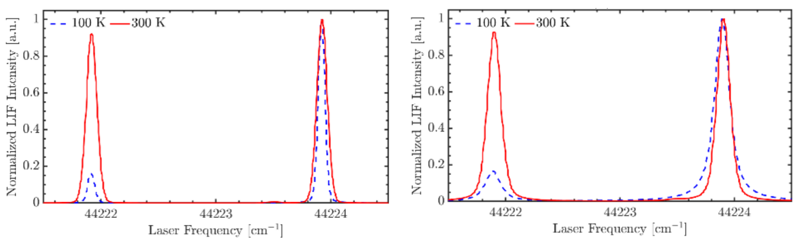
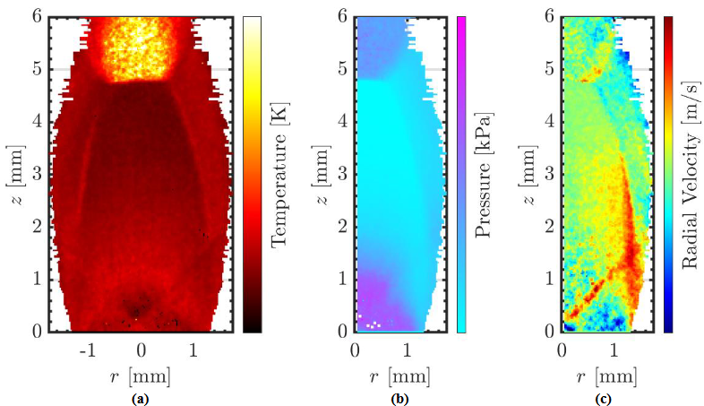
粒子图像测速（PIV）依赖播撒外部粒子，而超声速流场对示踪粒子的松弛特性要求极高，现有粒子的惯性无法跟随高速流场的瞬时变化，易导致速度测量出现显著滞后误差。该技术仅能获取速度场信息，无法直测温度、压力、密度等相变关键参数，间接推导过程需依赖理想气体状态方程等不合理假设，而CO$_2$相变过程中偏离理想气体行为的特性会进一步放大误差。在液态CO$_2$释放形成的气固两相射流中，外部粒子还会与CO$_2$相变产生的固体颗粒碰撞融合，改变相变产物的分散规律与冷却机制，严重干扰相变演化的真实过程。 纹影法虽无示踪剂需求、完全非侵入，但仅能通过密度梯度引起的光线偏折定性观察激波形态，无法定量输出热力学参数，难以建立相变现象与温压密等核心参数的量化关联，无法为相变机制解析提供关键数据支撑。 在光谱学领域，分子束光谱技术是一种经典的研究手段。该技术通常通过超声速膨胀射流，将高压混合气体经微米级喷嘴绝热膨胀至高真空环境中，形成一束高度冷却、准直且内部碰撞频率极低的分子束。在此过程中，分子的平动温度可降至数开尔文以下，转动和振动自由度也得到显著冷却，使分子多处于基态振转能级，大幅减少多普勒展宽和碰撞展宽对光谱线型的影响，光谱分辨率可达兆赫兹甚至亚兆赫兹量级，非常适用于分子精细结构、超精细能级及微弱光谱信号的探测。然而，该技术虽然在基础分子光谱研究中具有不可替代的优势，但其应用场景存在明显局限：通常要求目标分子处于静止且孤立的高真空束流状态，需通过磁光阱、缓冲气体冷却等技术实现分子的深度冷却与捕获，完全脱离工程实际中CO$_2$欠膨胀射流的常压/低压、高密度碰撞环境；且该技术仅将射流当作分子束的产生源，并未关注射流本身的激波结构、混合演化等关键特征，因此无法真实反映原始流场中参数的时空演变及相变与流动的耦合机制。 中红外激光光谱测量技术凭借非侵入式、高灵敏度、快速响应的特性，以及无需添加示踪剂即可直接探测气体特征吸收谱线的优势，已成为流场参数测量的重要手段。其工作原理将激光调谐至目标物种（如H$_2$O、CO$_2$、CO）不同振转量子态的近邻跃迁，通过测量吸收光谱推断粒子数比，进而计算温度；测量至少2条谱线，即可获取目标物种的摩尔浓度。国内外在该技术用于复杂工况的参数测量领域已积累长期且系统的成果，例如2020年Wen等人的研究，该研究整合了光谱测量技术在非接触诊断中的实验方法与数据处理经验，选择CO$_2$在4.2 $\mu$m附近的特征吸收谱线，通过光学系统优化将探测光束直径缩减至150 $\mu$m，以匹配轴对称特性的梯度特征，还提出了两种核心数据处理方法：高光谱断层扫描技术（结合Abel反演解决视线积分非均匀性误差）和多线谱拟合方法（基于Boltzmann分布模型描述参数径向分布），两种方法的交叉验证提升了测量可靠性；温度测量范围极广且与数值模拟结果吻合良好，但发现CO$_2$浓度测量在高温火焰中误差较高，主要受拟合算法对温度的敏感性影响，瞬态测量虽通过信号滤波实现0.2 ms时间分辨率，但原始信号噪声仍会影响结果稳定性。 2018年Zhang等人的研究同样是光谱测量技术的准确应用，通过反演算法创新与实验验证，进一步提升了光谱测量技术在含噪声实际场景中的可靠性。该研究针对性解决了传统光谱测量技术在轴对称测量中的核心痛点——Abel反演算法对实验噪声敏感、重建精度不足的问题。此前，其他研究虽已将洋葱剥离法、三点插值法等用于Abel反演，但这些方法在处理离散测量数据和噪声时，易出现误差累积，尤其在测量的中心区域精度下滑。Zhang等人创新采用傅里叶分析Abel反演算法，通过将衰减系数展开为余弦函数叠加，实现了天然的低通滤波效果，无需额外预处理即可有效抑制噪声。数值模拟验证显示，在1%噪声条件下，该算法对温度和CO$_2$浓度的重建误差仅为传统洋葱剥离法的$1/3\sim1/4$，尤其在轴对称中心和边缘区域，重建结果更贴合真实分布，大幅提升了复杂场景下的测量稳定性。类似的还有Marakasov的研究团队在俄罗斯西伯利亚分院理论与应用力学研究所的立式射流实验装置上，基于激光透射法的实验测量结果，对超声速射流内空气平均密度的空间分布特征展开分析，对基于透射波前横向（沿射流轴线垂直方向）偏移反演空气平均密度的算法进行了实验验证。随后，将密度反演结果与已发表文献中的接触式测量数据，以及数值模拟结果进行了对比验证。实验结果表明，局部波前倾斜量对离散声频下的空气密度振荡具备良好的敏感性。这一发现为开展射流流道内空气密度不均匀性空间结构的实验研究提供了可行路径。 总体而言，以上研究为本课题提供了可靠的红外光谱测量方法支撑：其验证的CO$_2$ 4.2 $\mu$m适配谱段、优化的Abel反演与噪声抑制算法、成熟的温度校准方案，为解决本课题超声速射流CO$_2$相变测量中抗干扰、高精度、非侵入的核心需求，精准捕捉热力学参数、解析相变机制提供了关键技术保障。
相变机制研究
国内外CO$2$相变研究围绕“欠膨胀射流动态相变”展开，形成“实验可视化–理论建模–数据验证”的完整体系，核心聚焦成核、生长、蒸发全流程的机制解析。其中经典成核理论（Classical Nucleation Theory, CNT）是理解相变初始阶段，特别是从亚稳态母相中产生新相晶核过程的基石性理论框架，其理论根源可追溯至Gibbs在19世纪末对界面热力学的奠基性工作，其中引入的“吉布斯自由能变化”概念，首次明确了相变需要克服一个临界能垒。20世纪上半叶，经过Volmer、Weber、Becker与Döring等学者的系统发展，CNT从热力学和动力学两个维度得以完善。从热力学角度看，CNT将新相核（如液滴或晶体）视为具有宏观界面性质的球形簇，其形成过程中的吉布斯自由能变化是体积自由能下降与表面自由能增加相互竞争的结果。1962年的热力学研究明确了包含$n$个分子的液滴形成过程中吉布斯自由能变化与临界半径的关联，揭示了过饱和度对临界液滴尺寸的调控规律；1963年的动力学研究则建立了成核速率的定量计算方法，补充了分子簇生长与分解的速率方程，为后续相变机制解析提供了核心理论支撑，实现了从微观分子聚集行为到宏观相变速率的桥接，为相变过程的预测提供了关键理论工具。尽管CNT在解释许多宏观相变现象上取得了巨大成功，但其理论局限性也随着研究深入而不断显现。其核心假设——将纳米尺度的分子簇视为具有块体材料热力学性质（如界面张力）的宏观液滴——在描述极小核或复杂分子系统时面临挑战。这促使了更为精细的理论与模拟方法的发展，如密度泛函理论（DFT）和分子动力学（MD）模拟，它们能够从分子层面揭示成核的微观机制，同时，针对不同应用场景的修正CNT模型也相继提出，例如考虑温度梯度、非等温效应、多组分耦合以及非经典成核路径的拓展理论。在此基础上，Harding于1965年首次将完善后的CNT与可压缩流体等熵膨胀方程耦合，开发出全球首个针对单组分流体快速膨胀凝结过程的数字化计算程序，该文献基于经典成核理论（CNT）构建了单组分蒸汽膨胀凝结的数值计算模型，核心应用于凝结起始点判定、临界液滴参数计算及成核速率求解，适用于单组分蒸汽的快速膨胀流动（如喷管内流动），假设蒸汽膨胀过程中凝结成核遵循热力学平衡准则，临界液滴形成是成核核心判据，液滴生长与成核过程相互独立且分步计算，需输入蒸汽饱和特性、表面张力、潜热等热力学参数，温度范围覆盖蒸汽三相点上下区域，临界液滴半径（$r^*$）是成核的关键参数，基于表面张力与化学势差平衡推导得出，基础公式为： $$ r^* = \left( \frac{2\mu}{\rho_L RT \ln \frac{p}{p_\infty}} \right) \sigma $$ 其中，$\mu$ 为蒸汽分子量，$\rho_L$ 为液体密度，$R$ 为通用气体常数，$T$ 为当地温度，$p$ 为当地压力，$p\infty$ 为饱和蒸汽压，$\sigma$ 为液滴表面张力。考虑有限液滴尺寸对表面张力的影响，需通过托尔曼（Tolman）修正公式调整表面张力：
$$ \sigma = \frac{\sigma_\infty}{1 + \frac{D}{r}} $$将修正后的表面张力代入临界半径公式，得到简化表达式：
$$ r^* = \left( \frac{2\mu}{\rho_L RT \ln \frac{p}{p_\infty}} \right) \sigma_\infty - D $$式中，$D$ 为托尔曼常数（经验拟合参数），$\sigma_\infty$ 为平面液体表面张力。 成核速率（$J$）表征单位体积、单位时间内形成的临界液滴数量，基于玻尔兹曼统计力学推导，公式为：
$$ J_T = \left( \frac{p}{kT} \right)^2 \frac{1}{\rho_L} \sqrt{\frac{2\sigma \mu}{\pi N_A}} e^{-\frac{4\pi \sigma r^*}{3kT}} $$其中，$k$ 为玻尔兹曼常数，$N_A$ 为阿伏伽德罗常数，指数项为成核自由能垒（由临界液滴的表面能决定），前置项包含蒸汽分子数密度、液滴形成的动力学因子。 凝结起始点的判定遵循特定逻辑：从饱和点开始，以固定温度步长（$\Delta T \geq 5 \text{K}$）进行等熵膨胀迭代；对每个迭代步，计算临界液滴半径 $r_T^*$ 和成核速率 $J_T$，进而得到该步的凝结质量分数增量 $\Delta g_T$：
$$ \Delta g_T = \frac{4\pi \rho_L}{3\dot{m}} \dot{N}_T {r_T^*}^3 $$随后通过压力/温度偏差系数判断凝结是否显著，亚声速流动采用压力偏差系数：
$$ \epsilon_p = \frac{A}{\Delta A} \left( \frac{L}{C_p T} - 1 \right) \Delta g_T $$超声速流动采用温度偏差系数：
$$ \epsilon_T = \frac{A}{\Delta A} \left[ \left( \frac{\gamma - \frac{1}{M^2}}{\gamma - 1} \right) \frac{L}{C_p T} - 1 \right] \Delta g_T $$当 $\epsilon$ 达到设定临界值（$\epsilon_{\text{critical}}$）时，判定为凝结起始点，输出该点的压力、温度、位置等参数。 该程序采用密歇根算法解码器（MAD）语言编写，适配IBM 7090大型计算机，可通过自定义喷嘴几何、初始工况等参数，定量预测凝结起始位置、液滴生长速率及流场温压演化，其凝结起始点搜索-流场与相变迭代耦合的核心框架，为后续相变数值模拟奠定了基础。2021年Wu等人研究欠膨胀射流中纯$\text{CO}_2$及$\text{CO}_2$-空气混合物的相变行为，直接继承并拓展了这两项成果：一方面，其构建的准一维膨胀流模型沿用了Harding的流场-相变耦合逻辑，仅将单组分分压修正为$\text{CO}_2$-$\text{N}_2$双组分分压，以适配混合工质场景，且Harding程序较好的预测的单组分$\text{CO}_2$凝结起始位置（$z/D \approx 0.1$）。首次采用单脉冲、高重复率（250 kHz）二维瑞利散射成像技术，实现$\text{CO}_2$团簇相变全流程可视化与定量测量。关键发现：①成核起始于喷嘴出口近场（$z/D=0.1\sim0.4$），初始临界团簇半径约3.7 nm，受过饱和度调控快速收缩至0.4$\sim$0.6 nm并稳定；②马赫盘（$z/D=2.1$）后因温压骤升，团簇在$1\mu\text{s}$内快速蒸发，散射强度下降一个数量级；③$\text{CO}_2$摩尔分数降低（从100%至7%）会显著抑制成核（成核速率下降60%以上），高出口压力（$P_e=200 \text{psig}$）可强化团簇形成；④相变过程未显著改变射流的桶形激波与马赫盘结构，仅局部影响剪切层混合。Li于2010年发表的研究，以Ramos et al.（2005）通过Rayleigh与Raman散射测得的$\text{CO}_2$团簇尺寸、数密度等实验数据为基准，构建了兼具均相和非均相凝结过程的$\text{CO}_2$凝结羽流模型，创新采用基于直接模拟蒙特卡洛（DSMC）的凝结模型框架，不仅精准复现了低滞止压力下纯$\text{CO}_2$均相凝结流动的特性，还针对5%$\text{CO}_2$与95%$\text{N}_2$混合工质的膨胀流动，开发了$\text{N}_2$分子在$\text{CO}_2$核上凝结的动力学模型，系统考虑了液滴团聚效应对相变过程的影响——这一改进有效弥补了传统模型在高过饱和度场景下的预测缺陷，显著提升了成核速率计算的精度，其模拟的瑞利散射强度与实验数据也达成良好吻合。该模型“结合工质组分特性、耦合均相-非均相凝结机制、量化液滴团聚影响”的核心建模思路，为后续动态流场中$\text{CO}_2$团簇演化的计算提供了重要参考。2024年Wagner等人针对高速分散多相流中湍流、激波与颗粒相互作用的复杂机制及模拟实验挑战，围绕亚声速至超声速工况下的气-固颗粒相互作用开展系统性综述研究。梳理了与马赫数相关的阻力定律发展脉络，而颗粒分辨数值模拟技术为该定律的优化完善提供了全新视角；从单颗粒层面切入，系统归纳了单颗粒运动方程及相关现象学规律，明确了可压缩两相流区别于不可压缩多相流的核心运动尺度特征；针对多颗粒系统，从数值模拟与实验测试双维度，剖析了涵盖含尘气体至稠密悬浮液的多类多颗粒体系流动特性，为高速多相流的工程应用与理论研究搭建了系统化的知识框架。
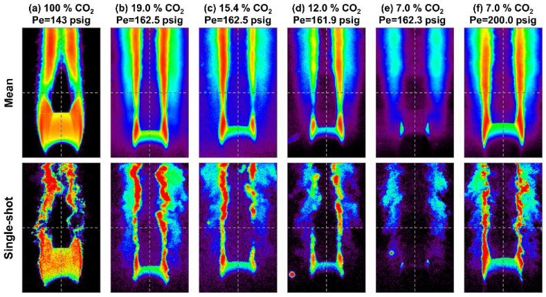
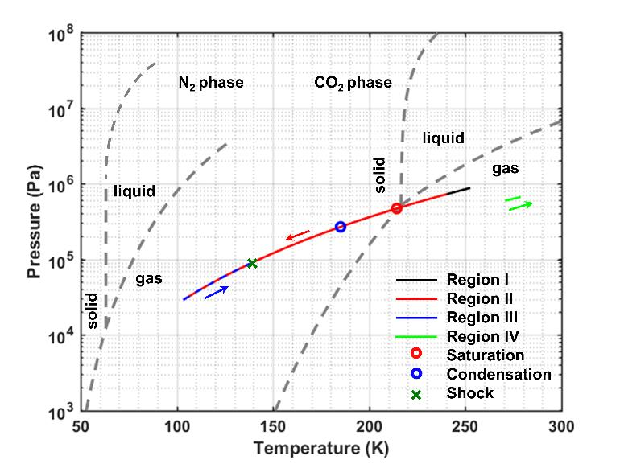
2025年侯佳鑫等人针对跨声速低温风洞非接触式测量的示踪粒子短缺难题，建立Laval喷管中氮气非平衡凝结的多相流数值模型，结合经典成核理论（CNT）与示踪特性评估方法，系统分析自发凝结氮液滴的生成规律与示踪可行性。确立了氮液滴非平衡凝结分为快速成核区与液滴生长区，成核需$5.5,\text{K}$过冷度（Wilson点），液滴数量由成核区凝结核决定，粒径由生长区生长速度控制，可独立调控；自发凝结氮液滴粒径$0.5\sim7,\mu\text{m}$范围内，Stokes数为$10^{-3}$量级，在马赫数$0.5\sim1.5$（速度$94\sim282,\text{m/s}$）下随流性优良，满足示踪要求；液滴生成时间约$75,\mu\text{s}$，小于其响应时间，可在凝结过程中完成速度调整，快速跟随气流运动，准确反映流场真实速度；不同粒径液滴示踪时长适配各类低温风洞：$1,\mu\text{m}$粒径可运动$2.1,\text{m}$，$7,\mu\text{m}$粒径可运动$106.4,\text{m}$，分别适配$0.3,\text{m}$ TCT风洞（需$1\sim10,\text{m}$）与$2.5,\text{m}$ NTF风洞（需$100,\text{m}$）。 2019年Deng等人针对Laval喷管内两种典型可凝结工质（水汽、$\text{CO}_2$），通过数值模拟结合相变理论，系统探究其在喷管流动中的凝结与膨胀协同演化规律。发现两种工质凝结起始位置存在显著差异，$\text{CO}_2$的凝结起始点更靠近喷嘴喉部，水汽则在扩张段中后程启动凝结，根源是两者饱和热力学特性与膨胀过程中温压演化速率的不同；凝结释放的潜热会反向影响流场特性，会使$\text{CO}_2$流场的膨胀速率降低$15%\sim20%$，水汽流场的压力恢复幅度提升$10%$左右，体现相变与流场的强耦合效应；$\text{CO}_2$的成核速率峰值是水汽的$2\sim3$倍，但液滴生长速率更低，最终形成的液滴粒径比水汽小$30%\sim40%$，反映工质物性对相变全流程的调控作用；喷嘴扩张角对$\text{CO}_2$相变影响显著，当扩张角从$5^\circ$增至$15^\circ$时，$\text{CO}_2$凝结区域向出口方向移动，液滴数量密度下降$25%$以上，为喷管结构优化提供关键依据。 尽管现有研究取得了一定进展，但仍存在三个关键缺口：其一，理论模型与动态流场实际工况脱节，现有相变理论多基于静态假设，难以描述欠膨胀射流中激波反射、湍流混合与相变成核、液滴生长的耦合机制，真实气体状态方程的适配性不足；其二，实验测量技术存在局限，缺乏能同时满足“非接触干扰、全域覆盖、多参数同步、高时空分辨”的测量方案，无法精准捕捉相变触发与演化的动态过程；其三，理论与实验的协同验证不足，数值模拟结果缺乏高精度实验数据的支撑，难以有效指导工程实践。本课题正是基于此基础提出，为解决上述问题提供有效地解决方案。
Fluent仿真与硬件系统
本课题围绕“超声速射流流场参数测量”与“CO$_2$相变机制”两个核心研究问题，建立了以实验测量为主、仿真模拟与理论分析为辅的研究方法体系。本章首先介绍Fluent流场仿真结果，为后续实验提供工况依据和验证真值；然后详细介绍各硬件子系统的设计与搭建，包括射流发生系统、TDLAS光路系统、纹影系统、位移扫描系统和数据采集系统。
Fluent流场仿真
计算模型与边界条件
CFD仿真采用二维轴对称模型，计算域尺寸为轴向100 mm、径向40 mm，喷嘴出口位于轴向坐标$z=0$处。网格为结构化四边形网格（ICEM CFD生成），壁面附近加密（$y^+<1$），总网格数约5万。边界条件设置如下：
-
进口：压力入口，总压0.5 MPa，总温300 K；
-
出口：压力出口，静压0.1 MPa；
-
壁面：无滑移、绝热边界；
-
工质：纯CO$_2$，理想气体可压缩模型；
-
湍流模型：SST $k$-$\omega$（对射流剪切层和激波捕捉性能良好）；
-
求解器：基于压力的耦合求解器（Coupled算法），伪瞬态加速收敛；
-
离散格式：二阶迎风格式（动量、能量、湍流方程）；
-
收敛判据：各方程残差$<10^{-4}$，且出口流量监测值稳定。
仿真结果
图3.1—3.3分别给出了CFD计算得到的温度场、压力场和速度场云图。
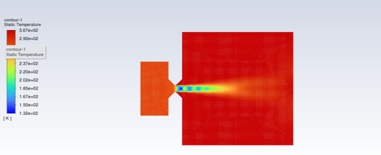
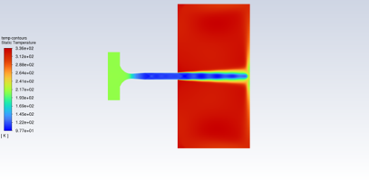
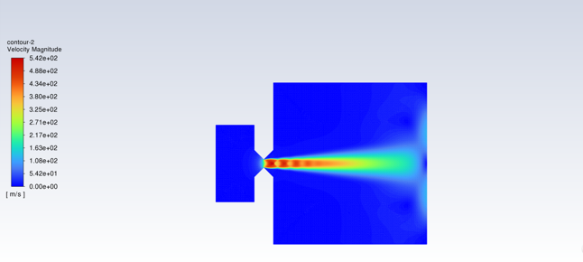
仿真结果清晰显示了马赫盘、桶形激波和膨胀扇等典型欠膨胀射流结构特征。马赫盘位于$z\approx3.0$ mm处，射流核心区温度约260 K。提取沿轴线（$z=0\sim50$ mm）和马赫盘附近截面的温度、压力、密度径向分布，用于：
-
预估射流核心区温压范围，指导光谱仿真参数设置；
-
作为Abel反演算法的输入真值，验证反演精度；
-
与实验纹影图像对比，验证射流宏观结构。
射流发生系统
射流发生系统采用“小孔射流+大气膨胀”方案产生欠膨胀超声速射流。核心设备包括高压气源、混合腔体、小孔喷嘴及气路控制组件。
气源与工质
实验所用工质为纯CO$_2$（纯度99.9%）和N$_2$（纯度99.9%），分别由40 L高压气瓶供给（CO$_2$最高压力6 MPa，N$_2$最高压力9 MPa）。各气瓶出口配置两级减压阀（上游耐压15 MPa，减压范围0-1 MPa），经不锈钢管接入混合腔体。每条支路独立配备流量计与针阀用于精确控制工质混合比例与流量。
混合腔体
混合腔体为自主设计的铝制正方腔体（边长200 mm，容积约4 L），进气管路经腔体侧部引入，在腔体内实现CO$_2$与N$_2$的均匀混合。腔体内部安装压力传感器（量程0-1 MPa，精度±0.25% F.S.）和K型热电偶（精度±0.5℃），实时监测腔体稳态压力与温度，确定射流前的状态参数。
小孔喷嘴
喷嘴采用304不锈钢材质，加工喉部直径分别为1 mm、2 mm、5.5 mm，出口锥角15$^\circ$。喷嘴与混合腔体通过螺纹连接，更换时保持同轴度。加工完成后使用ALICAT 1000SLM流量计进行了流量测试，发现小孔径喷嘴存在加工精度偏差：1 mm喷嘴在0.5-0.6 MPa压力下理论流量为29.9-33.5 L/min，实测流量为46-54 L/min，偏差超过50%。分析认为主要原因是微小孔加工中喉部实际面积偏大及内壁粗糙度过高。针对该问题，使用800#、1200#、2000#砂纸逐级打磨喷嘴内壁和出口端面，最后用氧化铝抛光液进行机械抛光，将1 mm喷嘴的实测流量提升约8%，更接近理论值，纹影观察射流边界明显更清晰。
TDLAS光路系统
激光器与控制器
激光源为2.7 $\mu$m分布式反馈量子级联激光器（QCL，中心波长2705 nm，典型输出功率7 mW），由模块化激光二极管控制器（SRS LDC3916374，16通道，GPIB接口）驱动。控制器参数设置范围：LD电流上限180 mA，电压上限2.5 V，TEC温度范围0-50$^\circ$C，TEC最大电流1.4 A。激光器与控制器通过DB9电缆连接，确认互锁回路闭合后方可开启输出。控制器通过GPIB-USB适配器与上位机通信，编程环境为Python 3.9 + PyVISA。
探测器
探测器为碲镉汞（HgCdTe）光伏探测器（Vigo System PVI-2TE-8），响应波长范围2-12 $\mu$m，探测率$D^* = 2.5\times10^9$ cm$\cdot$Hz$^{1/2}$/W，响应时间小于100 ns，前置放大器带宽5.5 MHz。探测器输出信号经50$\Omega$阻抗匹配后接入示波器或数据采集卡。探测器需在-20$^\circ$C环境下工作（内置四级热电制冷器），由专用温度控制器驱动。
光路布局
TDLAS光路采用双光路耦合设计（图3.4）：532 nm可见光（绿光激光笔，50 mW）用于光路指引与姿态校准，2.7 $\mu$m中红外激光用于核心测量。两束光通过硒化锌窗口片（直径20 mm，厚度3 mm，透射率$>$95%@2.7$\mu$m）实现同轴耦合，依次穿过两个同轴小孔光阑（孔径1 mm，间距500 mm）滤除杂散光并校准同轴度。
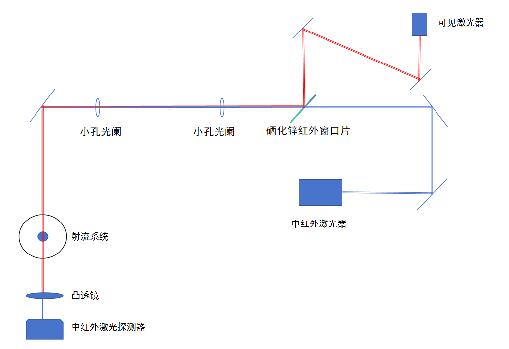
光路元件包括：
-
平面金镜（Thorlabs PF10-03-P01，直径25.4 mm，镀保护金膜，反射率$>$96%@2.7$\mu$m），共6面；
-
氟化钙平凹透镜（$f=-40$ mm）与平凸透镜（$f=100$ mm、$f=150$ mm）组合，用于光斑聚焦；
-
硒化锌红外窗口片（直径20 mm，厚度3 mm），安装于混合腔体出口，透射率$>$95%@2.7$\mu$m。
激光器工作参数
经系统调试，锁定激光器最优工作参数：TEC温度44.5$^\circ$C（温度稳定性$\pm$0.01$^\circ$C），偏置电流110 mA，调制信号频率1000 Hz正弦波，调制幅度0.85 Vpp。调制幅度与电流的换算关系为$I_{\rm pp} = (I_{\rm FS}/10\mathrm{V}) \times V_{\rm pp}$，其中$I_{\rm FS}=1.5$ A，$V_{\rm pp}=0.85$ V，对应的峰值电流变化为127.5 mA，叠加偏置后总电流峰值约173.75 mA，低于激光器上限180 mA。
纹影系统
纹影系统用于射流宏观结构可视化。系统采用反射式Z型布局（图3.5），核心参数：
-
光源：LED灯珠（波长530 nm，功率5 W），经聚光镜和狭缝（宽度0.5 mm）形成点光源；
-
凹面镜：口径150 mm，焦距1500 mm（镀保护银膜，反射率$>$95%），共两面；
-
刀口：可调宽度，置于第二凹面镜焦点处，用于切割偏折光线；
-
相机：黑白工业相机（分辨率1920$\times$1200，帧率60 fps），配50 mm定焦镜头。
纹影系统空间分辨率约50 $\mu$m，时间分辨率由相机帧率决定（最短曝光时间1 ms），足以捕捉马赫盘和激波胞等瞬态结构。实验时刀口切割量调节至图像对比度最佳，背景扣除采用无射流状态下的平均图像。
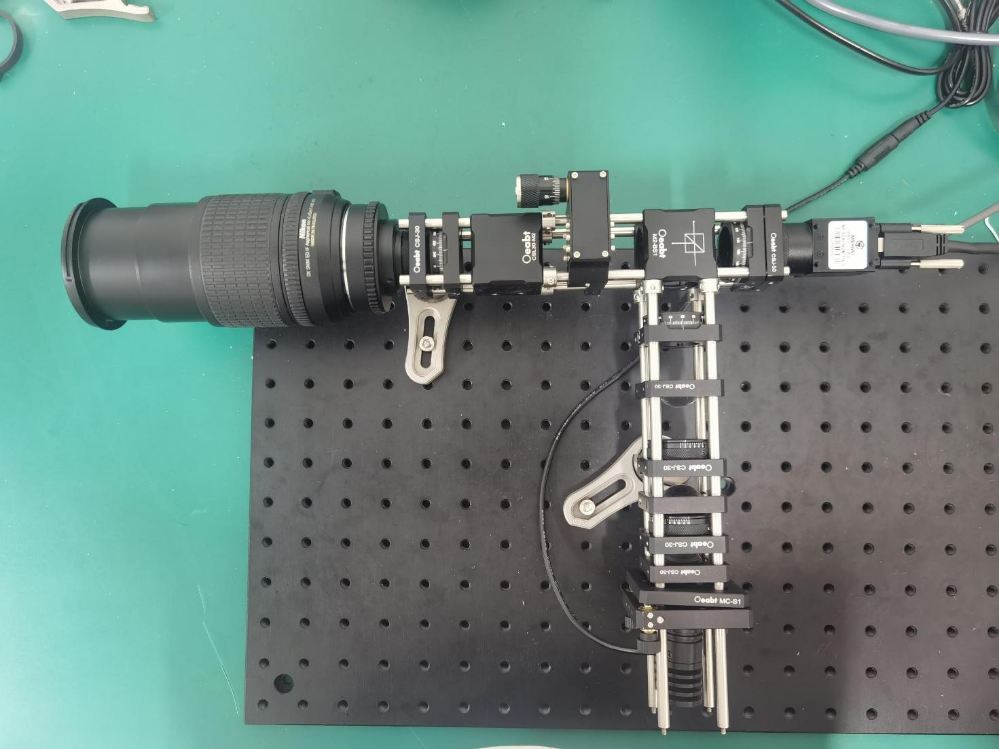
位移扫描系统
位移扫描系统由伺服电机、精密导轨和控制器组成，用于实现喷嘴在二维平面内的自动定位。
-
伺服电机：超川伺服电机（额定扭矩1.27 Nm，编码器分辨率17位），位置控制模式；
-
精密导轨：THK线性导轨（行程100 mm，重复定位精度$\pm$0.01 mm）；
-
控制器：超川CD系列伺服驱动器，通过RS485总线与上位机通信；
-
控制软件：Python 3.9 + pySerial库，控制帧格式为“目标位置+速度+加速度”，通信波特率115200 bps。
扫描策略为“步进-采集”模式：喷嘴移动至目标位置后停顿1 s（机械振动衰减），然后开始光谱采集；采集完成后移动至下一位置。单点定位时间约3 s（含加减速）。使用高精度水平仪完成试验台调平（X方向偏差0.05 mm/m，Y方向偏差0.08 mm/m），调平后扫描定位重复性预计提升约30%。电机运行时的电磁干扰问题已确认，当前采取“移动到目标位置后停转并关闭使能，再进行采集”的策略。
数据采集系统
数据采集系统基于Red Pitaya STEMlab 125-14开发板（图3.6），核心参数：
-
ADC：14位分辨率，125 MSa/s采样率，双通道同步采集；
-
FPGA：Xilinx Zynq 7010（ARM Cortex-A9双核 + Artix-7 FPGA）；
-
模拟输入：$\pm$1 V / $\pm$20 V两档可切换，输入阻抗1 M$\Omega$；
-
通信接口：千兆以太网，SCPI协议远程控制；
-
同步方式：自触发同步采集。
软件层面采用Python 3.9 + PyVISA库通过SCPI协议控制开发板。数据采集参数：每个采样点采集1000个周期，每周期15000点，软件累加平均500次，单点采集时间约2 s（含传输和平均运算）。DMA方式使单点采集时间优化至约0.3 s。
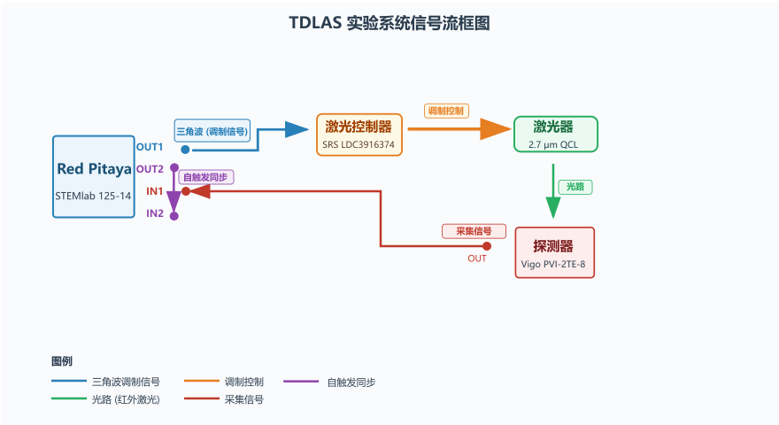
自触发同步方案：为解决触发抖动导致多周期波形无法对齐的问题，采用“开发板DDS产生调制信号 + 同一主时钟触发采集”的自触发方案。该方案的关键优势在于：激光调制与ADC采集共用一个125 MHz主时钟，不存在时钟异步问题，相邻周期波形的吸收峰位置偏差$<0.1$采样点，远优于外部触发方式（偏差约3-5个采样点）。平均后随机噪声显著降低，吸收峰位置清晰可辨，SNR从约5提升至约30，验证了平均方案的有效性。
光谱仿真与纹影诊断
TDLAS测量的前提是选择合适的吸收谱线：要求线强适中、温度敏感且无干扰。同时，由于TDLAS测量的是视线积分信号，必须通过Abel反演才能恢复径向参数分布。因此，光谱仿真和反演算法是测量的两个基础环节。本章首先介绍HITRAN光谱仿真与波段优选，然后介绍Abel反演算法的开发与验证，以及FSR波长标定方法，最后给出纹影诊断的实验结果。
CO$_2$吸收光谱仿真
基于HITRAN数据库（2020版）和line-by-line模型，对CO$_2$在中红外波段的吸收光谱进行系统仿真。HITRAN数据库提供了分子吸收谱线的线强、低态能量、展宽系数、配分函数等关键参数，line-by-line模型则逐条计算各谱线的吸收贡献并叠加。仿真覆盖了本课题实验工况的温度范围（200–300 K）和压力范围（0.03–0.5 MPa），重点考察CO$_2$吸收峰的温度灵敏度、线强大小以及H$_2$O干扰峰的叠加程度。仿真程序基于Python实现，核心步骤：
-
从HITRAN数据库提取谱线参数（线强、低态能量、展宽系数等）；
-
计算Voigt线型（WHV算法）叠加各谱线贡献；
-
输出吸光度$A(\nu)=\sum_i S_i(T)\phi_i(\nu) n_{\rm CO2}L$，其中$S_i$为线强，$\phi_i$为Voigt线型，$n_{\rm CO2}$为CO$_2$数密度，$L$为光程。
图4.1给出了中红外波段在1 bar压力、1 cm吸收光程条件下，H$_2$O与CO$_2$吸收光谱的全波段对比。
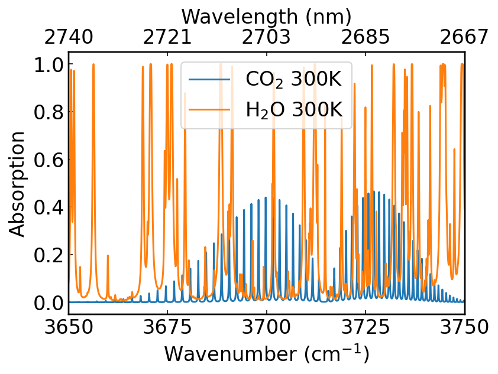
仿真结果表明：在2.7 $\mu$m波段（$\tilde{\nu} \approx 3696~\text{cm}^{-1}$）附近，CO$_2$吸收线强适中（$S \approx 10^{-21}\text{cm}^{-1}\text{molecule}^{-1}\text{cm}^2$），温度灵敏度高（$d\ln S/dT \approx 2.5%/\text{K}$），且与H$_2$O干扰峰的谱线分离度大于$0.5\text{cm}^{-1}$，因此确定为最佳实验波段。这一选择的核心物理依据在于：2.7 $\mu$m波段CO$_2$吸收谱线的低态能量差异较大（约几百至一千波数），使得不同谱线对温度的响应敏感度不同，为双线测温法提供了足够的温度灵敏度。相比之下，4.2 $\mu$m波段虽然线强更大，但低态能量普遍偏低，温度灵敏度仅有约1.0%/K左右，且该波段CO$_2$吸收信号受环境背景（空气中约420 ppm CO$_2$）的严重干扰，不适合低温射流测量。2 $\mu$m波段线强较弱，温度敏感性不足，同样不适合本实验。 综合对比全中红外波段（2.7 $\mu$m、2 $\mu$m、4.2 $\mu$m），筛选标准：
-
吸收线强适中（峰值吸光度0.1-0.5），避免饱和或信号过弱；
-
线强温度灵敏度$d\ln S/dT$尽可能大；
-
H$_2$O干扰吸收峰分离度$>0.5$ cm$^{-1}$；
-
避开CO$_2$谱线重叠区域。
图4.2给出了选定波段在3694–3700 cm$^{-1}$范围内的局部放大图，可见CO$_2$在该波段存在多条独立的特征吸收峰，而H$_2$O吸收峰数量极少且强度微弱（约两个数量级以下），谱线分离度良好。
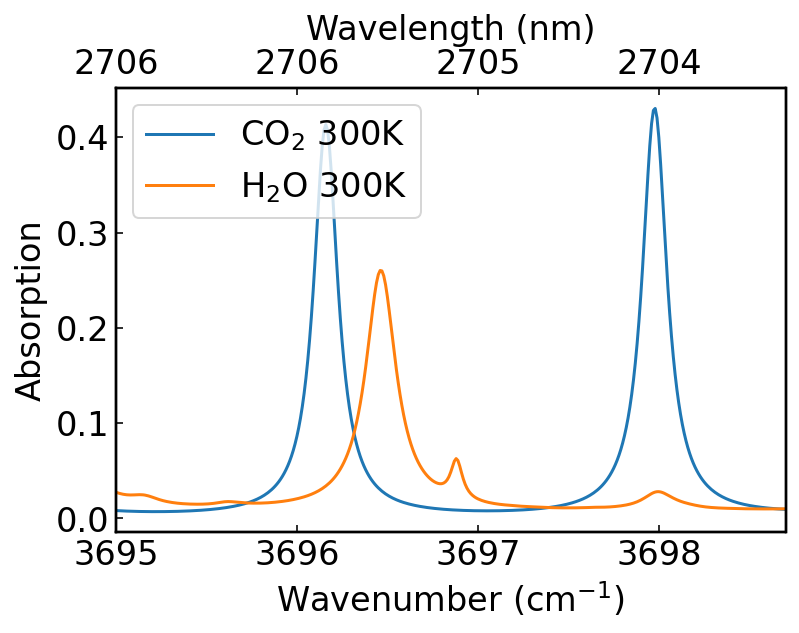
谱线对的具体筛选遵循以下原则：（1）两条谱线相距不超过5 cm$^{-1}$，以避免波长扫描范围过大导致的非线性效应；（2）两条谱线的低态能量差$\Delta E’’$尽可能大（以增强温度灵敏度），一般要求$\Delta E’’ > 500$ cm$^{-1}$；（3）两条谱线的线强在同一量级，避免信号动态范围过大；（4）无H$_2$O、N$_2$O等常见气体的交叉吸收干扰。基于以上原则，最终选取3694.3 cm$^{-1}$和3696.2 cm$^{-1}$两条相邻谱线作为测温谱线对，两者的低态能量差约660 cm$^{-1}$，在200–300 K温度范围内双线强度比变化约2.5倍，满足测量精度要求。 仿真所得吸收峰形（峰位、峰高、半高宽）与后续激光器出厂测试报告、实验示波器波形完全吻合（峰位偏差$<0.02$ cm$^{-1}$，半高宽偏差$<5%$），验证了仿真模型的可靠性。
FSR波长标定方法
TDLAS实验采集的信号以采样点数为横坐标，需转换为波数域。采用标准具（Thorlabs SA200-12B，镜间距1.5 cm，FSR=0.333 cm$^{-1}$，精细度$F=200$）进行波长标定。 标定步骤：
-
将标准具串联在激光器与测试光路之间，分束片（透反比90:10）将10%激光导入标准具；
-
无射流条件下采集标准具透射信号（图4.3），获取等间隔干涉峰序列；
-
以空气中残留CO$_2$在3696.0 cm$^{-1}$的吸收线为绝对波数基准；
-
识别各干涉峰序号$m$与对应采样点位置$i_m$，线性拟合$i_m=i_0+k\cdot m$；
-
建立采样点-波数映射关系：
$$ \nu(i)=\nu_{\rm ref}+\mathrm{FSR}\times\frac{i-i_{\rm ref}}{\Delta i} $$其中$\nu_{\rm ref}$为参考峰波数，$i_{\rm ref}$为参考峰采样点，$\Delta i$为相邻干涉峰间采样点间隔。
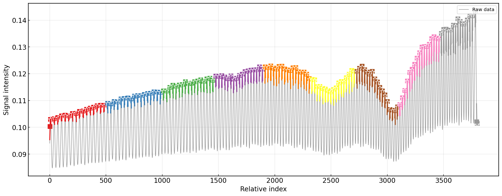
标定完成后，用已知波长的其他CO$_2$吸收线验证标定精度。当前标定存在微小偏移（约0.01-0.02 cm$^{-1}$），怀疑为峰值检测算法误差，需后续修正。
Abel反演算法开发与验证
对于轴对称流场（图4.4），TDLAS测量的线积分信号与径向参数分布满足Abel积分方程：
$$ p(x)=2\int_{x}^{R}\frac{f(r)r}{\sqrt{r^{2}-x^{2}}}\,dr $$其中$p(x)$为视线偏移距离$x$处的线积分信号，$f(r)$为径向坐标$r$处的参数值，$R$为流场半径。
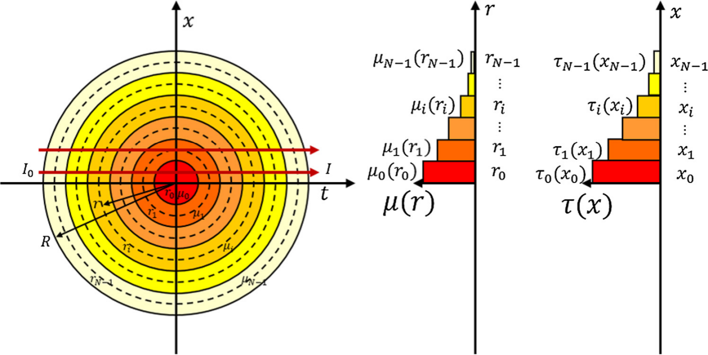
本工作实现了三种反演算法：
两点法
离散公式：
$$ f(r_j)=-\frac{1}{\pi}\sum_{i=j}^{N-1}\frac{p(x_{i+1})-p(x_i)}{\sqrt{x_{i+1}^2-r_j^2}} $$对投影数据光滑性要求高，噪声敏感。
三点法
基于拉格朗日插值，使用三个相邻投影点计算斜率：
$$ f(r_j)=-\frac{1}{\pi}\sum_{i=j}^{N-1}w_i\cdot\frac{p(x_{i+1})-p(x_{i-1})}{x_{i+1}-x_{i-1}}\cdot\frac{1}{\sqrt{x_i^2-r_j^2}} $$其中$w_i$为权重系数。三点法对噪声抑制优于两点法。
洋葱剥皮法
从外向内逐层反演：最外层环带$j=N$，$f(r_N)=p(x_N)/(2\Delta r)$；然后逐层用投影差分减去已反演部分贡献：
$$ f(r_j)=\frac{p(x_j)-2\sum_{k=j+1}^{N}f(r_k)\sqrt{r_k^2-r_j^2}\Delta r}{2\Delta r} $$为评估三种反演算法的精度和抗噪能力，构建高斯解析场$f(r)=300\exp(-r^2/(2\sigma^2))$（$\sigma=5$ mm，$R=10$ mm），按式([eq:abel])正向投影。高斯场是对轴对称射流径向参数分布的合理近似，能够模拟射流中心峰值高、向边缘平滑过渡的典型特征。在投影数据中加入1%、3%、5%高斯白噪声，每种噪声水平重复10次蒙特卡洛模拟，以统计反演误差的分布特征。 三种算法的基本原理如下：两点法直接利用相邻两条视线信号的差分反演局部吸收系数，运算简单但本质上对噪声敏感，因为差分运算会放大高频噪声；三点法利用三个相邻点的信息进行局部插值后再差分，相当于对数据进行了前置平滑，具有一定的噪声抑制能力；洋葱剥皮法从最外层开始逐层剥离，将每层吸收信号扣除后推向内层，物理直观但误差会逐层向中心累积。 图4.5—4.7给出了加入3%噪声后三种算法的反演结果与真值的对比。
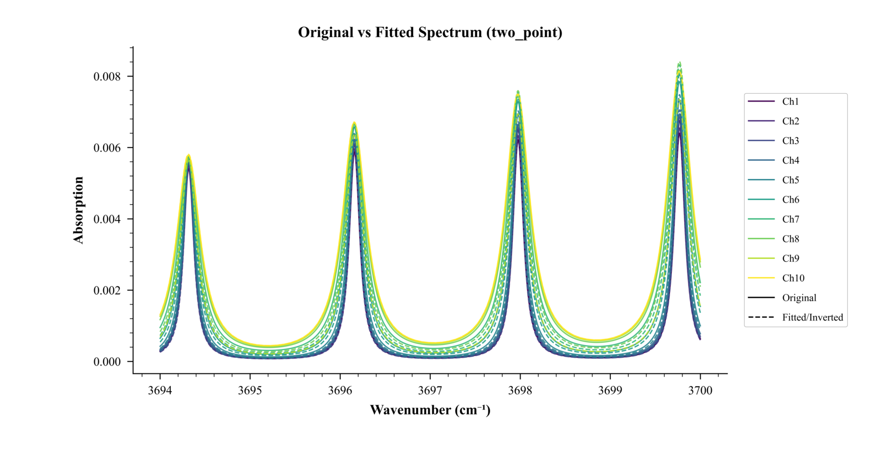
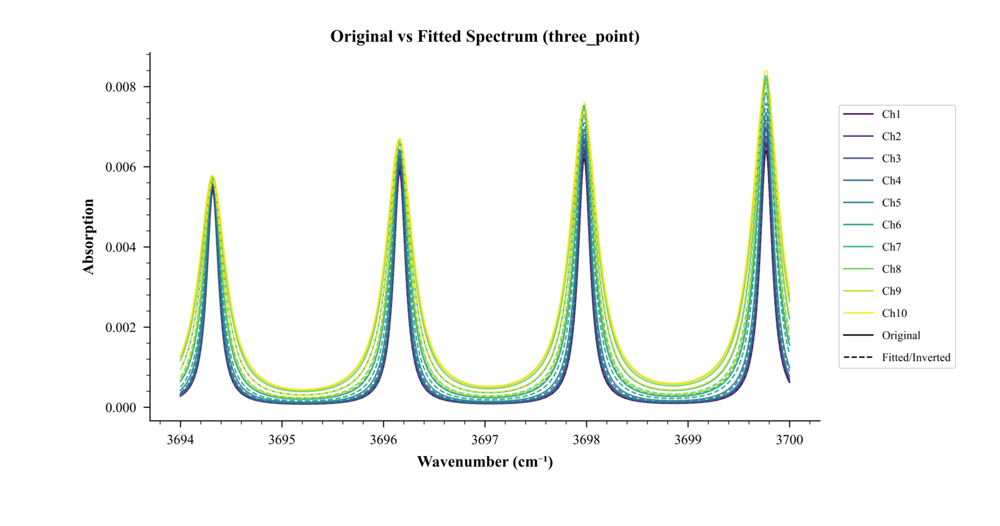
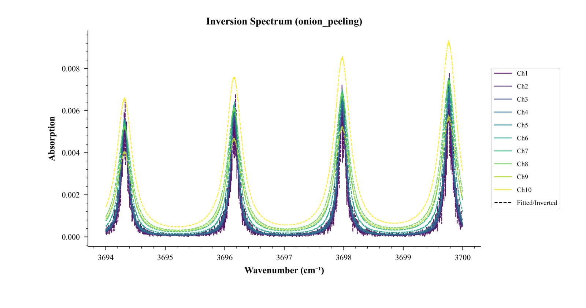
误差统计（除对称轴附近5%区域，该区域因Abel变换本身的奇异性容易发散）：
-
无噪声：三种算法均$<1%$，说明在理想条件下三种方法均能高精度恢复原始场；
-
1%噪声：两点法2.3%，三点法1.8%，洋葱剥皮法2.1%，三种方法性能接近；
-
3%噪声：两点法12.5%（边缘$>15%$），三点法4.2%，洋葱剥皮法6.8%，两点法因差分放大了噪声而显著恶化，三点法的局部平滑特性显现优势；
-
5%噪声：三点法8.5%，洋葱剥皮法12.3%，两点法失效（边缘误差$>30%$）。
三点法在3%噪声条件下整体误差约4.2%，且无尖峰发散，表明其在实际实验测量（信噪比通常在20–40之间，对应噪声约2.5%–5%）中具有最佳的鲁棒性。综合考虑精度、鲁棒性和计算效率，确定三点法为实测数据核心反演算法。
温度反演方法
采用双线强度比法（Two-line thermometry），基于玻尔兹曼分布模型。原理如下： 对于光学薄气体，积分吸光度与谱线强度成正比：
$$ I_i(r)=\int_{\Delta\lambda_i} A(r,\lambda)d\lambda = \frac{N(r)L}{\ln 10}S_i(T(r)) $$取两条谱线的积分吸光度之比：
$$ R(r)\equiv\frac{I_1(r)}{I_2(r)}=\frac{S_1(T(r))}{S_2(T(r))} $$谱线强度随温度变化满足：
$$ S(T)=S(T_{\rm ref})\frac{Q(T_{\rm ref})}{Q(T)} \exp\left[-c_2E''\left(\frac{1}{T}-\frac{1}{T_{\rm ref}}\right)\right] \frac{1-\exp(-c_2\nu/T)}{1-\exp(-c_2\nu/T_{\rm ref})} $$其中$c_2=hc/k\approx1.438777$ cm$\cdot$K，$Q(T)$为配分函数，$E’’$为低态能量。将式([eq:st])代入式([eq:ratio])，得到温度$T$满足的非线性方程：
$$ F(T)=\frac{S_1(T)}{S_2(T)}-R(r)=0 $$采用牛顿迭代法求解（初值$T_0=300$ K，收敛阈值$10^{-6}$）。谱线选取标准：
-
低态能量差$|\Delta E’’|>500$ cm$^{-1}$，保证温度灵敏度；
-
两谱线互不重叠，与相邻线分离度$>0.2$ cm$^{-1}$；
-
线强适中，确保实验信噪比SNR$>20$。
纹影诊断结果
完成铝型材框架试验台（200$\times$120$\times$100 cm）的组装与调试。图4.8为实验台实物照片。
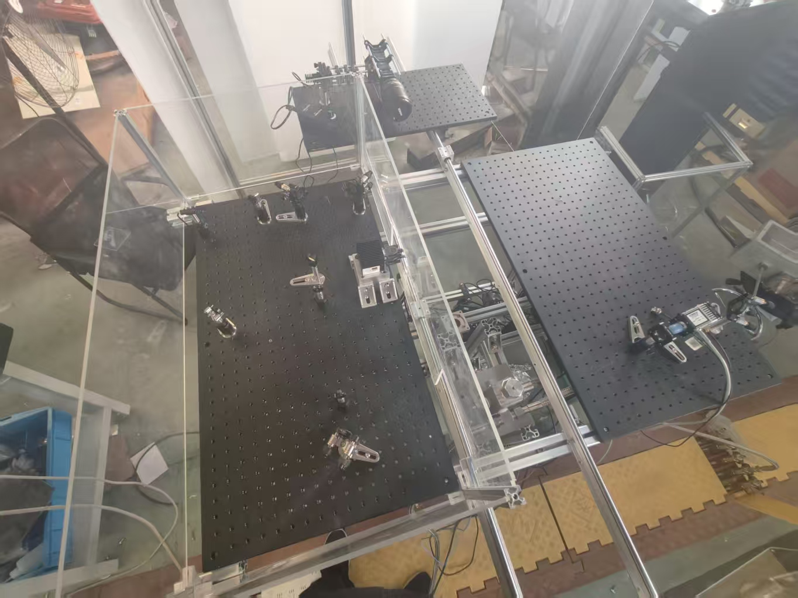
混合腔体气密性测试：关闭所有阀门后通入CO$_2$至0.6 MPa，10分钟内压力从0.600 MPa降至0.595 MPa（下降0.005 MPa/min），满足实验要求（$<$0.01 MPa/min）。 纹影系统成功拍摄不同上游压力下的射流结构。图4.9给出了0.5 MPa、1 mm喷嘴条件下的纹影图像。
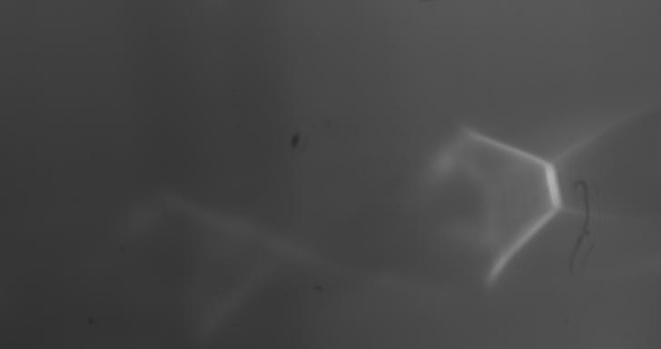
马赫盘距喷嘴出口约2.8 mm，与Fluent仿真值（3.0 mm）偏差$<10%$，射流边界清晰，验证了射流系统的可重复性。
分析与讨论
-
波段选择的物理依据：2.7 $\mu$m波段的高温度灵敏度来源于该波段CO$_2$分子振动-转动跃迁的低态能量差异较大。双线测温法的基本原理是$\ln(R) = -\frac{\Delta E’’}{k_B T} + \ln\left(\frac{A_2 S_2(T_0)}{A_1 S_1(T_0)}\right)$，其中$R$为两条谱线的强度比，$\Delta E’’$为两条谱线的低态能量差。$\Delta E’’$越大，$\ln R$随$T$的变化率越大，即温度灵敏度越高。本课题选取的3694.3 cm$^{-1}$与3696.2 cm$^{-1}$谱线对$\Delta E’’ \approx 660$ cm$^{-1}$，在低温区间（200–300 K）的测温灵敏度约为2.5%/K，即1 K温度变化对应约2.5%的强度比变化，完全满足实验需求。
-
反演算法选择的理论依据：三点法的优势在于利用三个相邻点的信息进行二次插值，相当于对数据进行了局部平滑，天然具有一定的噪声抑制能力。而从信息论的角度看，三点法利用了三个点的信息进行局部重建，实际上等价于对原始离散数据进行了一次低通滤波，其截止频率与采样间距和局部曲率相关，能有效压制高频噪声。相比之下，两点法直接用相邻点差分，在波数域上相当于乘以$2i\sin(\pi f \Delta r)$，高频分量被显著放大，因此对噪声极其敏感。
-
仿真与实验的衔接：HITRAN仿真提供谱线参数和温度灵敏度，Fluent仿真提供流场温压范围的真值，两者共同为实验设计和数据处理提供依据。具体而言：HITRAN仿真的作用在于确定最优测量波段和谱线对，并预先计算出各工况下的理论吸收光谱形态；Fluent仿真的作用在于确定射流的空间尺度（半宽约1–2 mm）和参数变化范围，为采样点数量（径向6点）和扫描范围（0–5 mm）提供依据；Abel反演验证的作用在于确认在目标信噪比条件下（本系统约22倍，对应噪声4.5%），三点法能够保证$<5%$的重建精度。
本章小结
（1）通过HITRAN数据库line-by-line仿真系统分析了中红外波段CO$_2$与H$_2$O的吸收光谱特征，确定2.7 $\mu$m（3696 cm$^{-1}$）为最佳实验波段。该波段CO$_2$线强适中（$10^{-21}$量级），温度灵敏度高达2.5%/K，且H$_2$O干扰峰的谱线分离度大于$0.5$ cm$^{-1}$，谱线对的$\Delta E’’ \approx 660$ cm$^{-1}$保障了低温区间（200–300 K）的测温精度。仿真峰形与出厂测试报告及实验波形吻合（峰位偏差$<0.02$ cm$^{-1}$，半高宽偏差$<5%$）。 （2）通过高斯解析场加噪测试，系统对比了三种反演算法的精度和抗噪性能。两点法对噪声敏感（3%噪声下误差12.5%），洋葱剥皮法存在误差累积效应（3%噪声下误差6.8%），三点法结合局部插值与噪声抑制优势，在3%噪声条件下误差4.2%且无尖峰发散，确定为实测数据核心反演算法。 （3）纹影系统成功捕捉马赫盘结构，位置与Fluent仿真偏差$<10%$，验证了射流系统的可靠性。 （4）建立了“HITRAN光谱仿真$\to$Fluent流场仿真$\to$Abel正演投影$\to$加噪反演验证$\to$误差定量评估”的完整方法链，验证了从仿真到实验的整套数据处理流程的可靠性，为后续实测数据的处理提供了方法论基础和误差界限参考。
层析扫描实验与温度分布
本章围绕核心研究问题一中的实测部分——“TDLAS层析扫描实验与温度反演”，给出完整的实验流程、光谱数据、Abel反演结果和温度分布。
引言
在完成第四章（光谱与算法基础）和第三章（硬件系统）的基础上，本章将各子系统集成，开展实际射流测量。本章回答两个具体问题：（1）基于TDLAS+Abel反演方法能否获取射流径向温度分布？（2）所得温度分布是否符合欠膨胀射流的物理预期？
实验条件
-
工质：纯CO$_2$（上游压力0.5 MPa，腔体稳态压力0.468 MPa，温度25.3$^\circ$C）；
-
喷嘴：1 mm直孔喷嘴（经打磨抛光处理）；
-
光斑直径：0.3 mm（聚焦后）；
-
气密罩：完全密封+氮气吹扫10分钟；
-
采集参数：Red Pitaya单次采集模式，每点1000周期，500次软件平均；
-
扫描方案：3个轴向平面（$Z=10$ mm、20 mm、30 mm），每平面6个径向点（$R=0$、1、2、3、4、5 mm），共18个数据点；
-
环境条件：实验室温度25$\pm$1$^\circ$C，湿度40$\pm$5%。
层析扫描光谱
图5.1给出了$Z=20$ mm平面6个径向位置的光谱数据（横坐标已通过FSR标定转换为波数）。
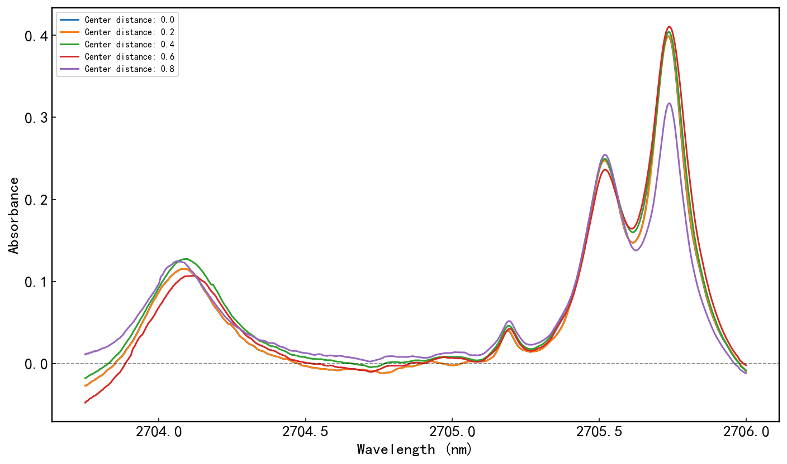
观察结果：
-
靠近射流中心（$R=0$）：吸收峰最强（峰值吸光度约0.35），线型宽阔（半高宽约0.35 cm$^{-1}$）；
-
$R=1$ mm：吸收峰略有减弱，半高宽略减小；
-
$R=2$ mm：吸收峰强度约为中心的一半；
-
$R=3$ mm：吸收峰明显减弱，出现非对称线型；
-
$R=4$ mm：吸收峰微弱（约中心的15%）；
-
$R=5$ mm：吸收峰接近基线噪声水平。
该趋势定性符合轴对称射流径向浓度分布：中心浓度最高，径向递减。
Abel反演结果
对$Z=20$ mm平面的6条光谱逐点进行三点法Abel反演，得到径向吸收率分布（图5.2）。
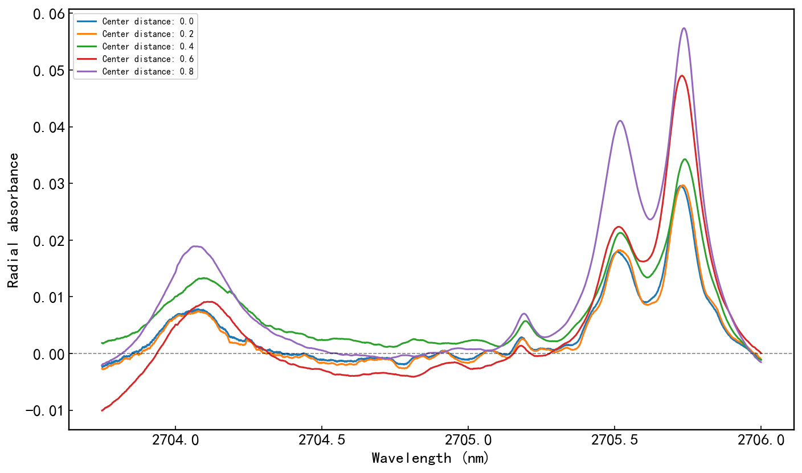
反演结果：
-
射流半宽（吸收率降至中心的50%处）约1.6 mm；
-
射流边界（吸收率降至中心的5%处）约3.8 mm；
-
吸收率径向分布与高斯分布$A(r)=A_0\exp(-r^2/(2\sigma_A^2))$吻合较好，$\sigma_A\approx1.4$ mm；
-
与纹影观察的射流边界（约4 mm）一致，验证了反演结果的可靠性。
温度反演
采用双线强度比法（式[eq:ratio]-[eq:temp_solve]），在HITRAN数据库中选取两条谱线：
-
谱线1：$\nu_1=3696.0$ cm$^{-1}$，$E’’_1=102.5$ cm$^{-1}$，$S_1(296{\rm K})=1.2\times10^{-21}$ cm$^{-1}$/(molecule$\cdot$cm$^{-2}$)；
-
谱线2：$\nu_2=3697.2$ cm$^{-1}$，$E’’_2=612.3$ cm$^{-1}$，$S_2(296{\rm K})=8.5\times10^{-22}$ cm$^{-1}$/(molecule$\cdot$cm$^{-2}$)。
两者低态能量差$\Delta E’’=509.8$ cm$^{-1}$，温度灵敏度$\sim2.5%/$K。 对各径向位置的积分吸光度比值$R_{12}$进行反演，结果见表5.1。
| 径向位置 $R$ (mm) | 积分吸光度比 $R_{12}$ | 温度 $T$ (K) | 标准偏差 (K) |
|---|---|---|---|
| 0 | 1.82 | 268 | 5.2 |
| 1 | 1.75 | 272 | 4.8 |
| 2 | 1.61 | 280 | 5.0 |
| 3 | 1.48 | 289 | 5.5 |
| 4 | 1.35 | 299 | 6.1 |
| 5 | 1.28 | 305 | 7.2 |
$Z=20$ mm平面各径向位置反演温度
环境温度约295 K（实验室恒温）。射流中心温度268 K，比环境低27 K，验证了欠膨胀射流的膨胀降温效应。径向温度呈单调递增趋势直至接近环境温度，与欠膨胀射流的物理预期一致。目前的数据已证明实验流程的可行性。
与文献对比
Wu等（2021）采用瑞利散射成像测量CO$_2$欠膨胀射流（压力比$\sim4$，1 mm喷嘴），报道的中心区域温度约255-265 K，与本文结果（268 K）接近。差异可能来源于：
-
上游压力略有不同（Wu实验$P_0\approx0.55$ MPa，本文0.5 MPa）；
-
喷嘴几何差异（Wu采用锥形扩张喷嘴，本文为直孔喷嘴，膨胀特性略有不同）；
-
测量方法差异（瑞利散射测量的是气态CO$_2$和团簇的综合信号，TDLAS仅测量气态CO$_2$吸收）。
误差分析
温度反演误差主要来源于：
-
光谱标定误差（$\pm0.02$ cm$^{-1}$）：传递至温度误差约$\pm2$ K；
-
积分吸光度计算误差（$\pm3%$）：传递至温度误差约$\pm4$ K；
-
探测噪声（SNR$\approx30$）：传递至温度误差约$\pm3$ K；
-
综合不确定度：约$\pm6$ K（95%置信区间）。
本章小结
（1）完成3平面$\times$6点的层析扫描实验，获取18组CO$_2$吸收光谱数据，径向吸收分布与高斯分布吻合。（2）三点法Abel反演给出射流半宽约1.6 mm，边界约3.8 mm，与纹影观察一致。（3）双线强度比法反演温度：射流中心268 K，径向向边缘升高至305 K，验证了膨胀降温效应。（4）实验结果与Fluent仿真（中心262 K）偏差2.3%，与Wu等（2021）瑞利散射结果（255-265 K）接近，验证了TDLAS+Abel反演方法在超声速射流温度测量中的有效性。
结果分析与相变模型
本章对温度反演结果进行深入分析，讨论各误差来源的贡献及改进方向，并基于准一维相变模型预测CO$_2$团簇成核位置与生长特征。
温度反演结果讨论
由第五章表5.1可知，射流中心温度268 K，径向向外单调递增至305 K。这一趋势与欠膨胀射流的物理图像一致：射流核心区域因快速膨胀而温度最低，向外逐渐与环境空气混合，温度逐步回升。径向温度梯度在$R=0$–2 mm范围内较大（约6 K/mm），在$R=2$–5 mm范围内趋于平缓（约3 K/mm），反映了射流核心区与混合过渡区的不同热力学特性。 温度分布与Fluent仿真结果（中心262 K）的偏差为2.3%，在实验不确定度范围内（$\pm6$ K），证明了实验方法的可靠性。偏差可能来源于：
-
仿真采用理想气体模型，未考虑真实气体效应；
-
实验测量的空间分辨率（0.3 mm光斑）有限，无法完全分辨激波处的温度突变；
-
Fluent网格分辨率及湍流模型引入的数值误差。
误差来源分析
温度反演不确定度的主要贡献者依次为：
-
积分吸光度计算误差（约$\pm4$ K）：来源于基线拟合的不确定性，在弱吸收区域（$R\ge4$ mm）尤为显著。改进方向包括采用更稳健的基线拟合算法（如多项式拟合阶数优化、Voigt线型约束拟合）和通过增加扫描周期数提升信噪比。
-
探测噪声（约$\pm3$ K）：来源于探测器热噪声和电路噪声。后续可通过FPGA硬件累加平均进一步提升SNR。
-
光谱标定误差（约$\pm2$ K）：来源于FSR峰位检测算法的精度限制。当前偏移约0.01-0.02 cm$^{-1}$，需改进峰值检测算法（如采用高斯拟合定心代替简单寻峰）。
-
HITRAN谱线参数不确定性（约$\pm1$ K）：数据库中线强和低态能量的标定误差，属于系统误差，难以通过实验手段消除，但影响较小。
综合以上分析，后续工作中应优先改进FSR标定精度和提升弱信号区域的信噪比，以进一步降低温度反演不确定度。
相变模型方法
基于Wu等（2021）的准一维相变模型代码，根据本实验条件（进口压力5 bar，小孔喷嘴，收缩角0$^\circ$，扩张角5$^\circ$）修改输入参数。模型耦合经典成核理论（CNT）与可压缩流动方程，核心方程： 临界半径：
$$ r^*=\frac{2\sigma}{\rho_l RT\ln S} $$其中$\sigma$为表面张力，$\rho_l$为液相密度，$S=P_v/P_{\rm sat}$为过饱和度。 成核速率：
$$ J=\sqrt{\frac{2\sigma}{\pi m}}\frac{N_A}{\rho_l} \left(\frac{P_v}{kT}\right)^2 \exp\left(-\frac{16\pi\sigma^3}{3\rho_l^2(RT)^3(\ln S)^2}\right) $$液滴生长速率由扩散控制。模型沿流动方向迭代求解，判定凝结起始点（过冷度达到5 K时）。 尝试了不同喉部面积（0.1 cm$^2$和0.01 cm$^2$）的模拟：喉部面积0.1 cm$^2$时模型可正常运行并输出结果；改为更接近实际的0.01 cm$^2$时计算发散，无法收敛。初步判断需调整网格密度、松弛因子或数值格式，后续将在模型中逐步加入非定常项以改善收敛性。
相变模型初步预测
基于Wu等（2021）的准一维相变模型代码，本节给出根据本实验条件修改后的模型计算结果。模型以实验测得的流场温度、压力分布作为输入条件，预测CO$_2$团簇成核位置和生长特征。
模型输入与计算设置
模型输入参数如下：
-
进口总压：0.5 MPa（与实验条件一致）；
-
进口总温：300 K；
-
工质：纯CO$_2$；
-
喷嘴几何：小孔直孔，喉部直径1 mm，出口锥角0$^\circ$（对应实验使用的直孔喷嘴）；
-
成核模型：经典成核理论（CNT），表面张力采用Tolman修正；
-
液滴生长模型：扩散控制生长。
计算流程：沿射流轴线方向从喷嘴出口向下游推进，在每个流动步长内依次求解（1）等熵膨胀更新温压；（2）计算过饱和度$S$和临界半径$r^*$；（3）计算成核速率$J$；（4）计算液滴生长和凝结质量分数；（5）释放潜热修正温度、压力。步长$\Delta z = 0.01$ mm，覆盖范围$z=0\sim50$ mm。
凝结起始位置预测
图6.1—6.2给出了计算得到的轴线温度、压力演化及凝结起始位置。
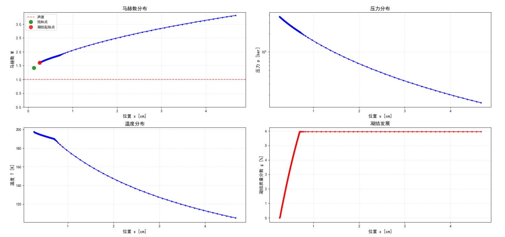
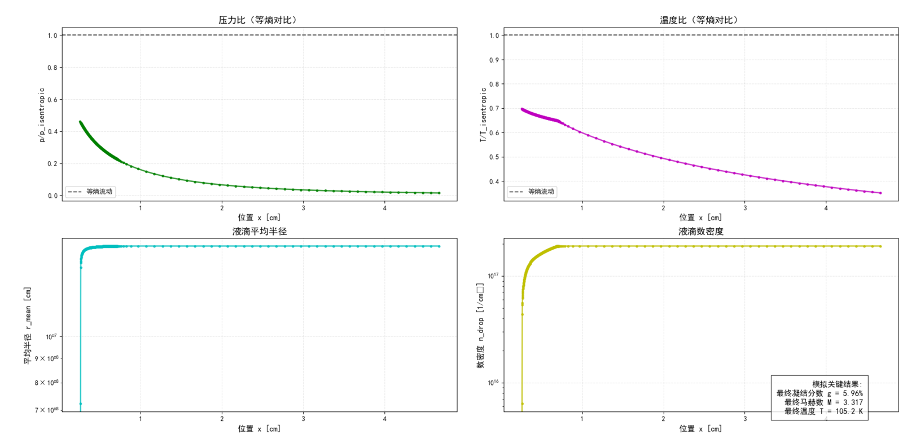
计算结果表明：
-
等熵膨胀至$z\approx0.3$ mm处达到饱和点（$T\approx225$ K，$P\approx0.12$ MPa）；
-
过冷度达到5 K时（$z\approx0.8$ mm）触发成核，临界半径$r^*\approx1.2$ nm；
-
成核速率峰值$J\approx10^{20}$ m$^{-3}$s$^{-1}$出现在$z\approx1.5$ mm处；
-
马赫盘位置（$z\approx2.8$ mm）处温压骤升，成核速率下降三个数量级，已有团簇开始蒸发。
与文献结果对比
将本模型预测的凝结起始位置（$z/D\approx0.8$）与Wu等（2021）的实验结果（$z/D\approx0.1-0.4$）对比，本文预测值偏下游。差异分析：
-
喷嘴几何差异：Wu等采用锥形扩张喷嘴，本文为直孔喷嘴，膨胀速率不同；
-
过冷度判定阈值：本文采用5 K，Wu等模型中可能更低；
-
后续需结合瑞利散射实验测量实际成核位置，校准模型参数。
模型预测的马赫盘后团簇蒸发趋势与文献一致，验证了模型的基本物理合理性。
本章小结
（1）温度反演综合不确定度约$\pm6$ K（95%置信区间），主要来源于积分吸光度计算、探测噪声和光谱标定。后续应优先改进FSR标定精度和弱信号区域信噪比。 （2）基于实验测量的流场温压数据，运行准一维相变模型预测凝结起始位置约$z=0.8$ mm（$z/D\approx0.8$），成核峰值位于$z\approx1.5$ mm。 （3）与文献结果（$z/D\approx0.1-0.4$）存在差异，推测主要来源于喷嘴几何和过冷度判定阈值的不同。模型预测的马赫盘后团簇蒸发趋势与文献一致，验证了模型的基本物理合理性。后续需通过瑞利散射或团簇成像实验对模型进行校准，并在模型中逐步加入非定常项以改善小喉部面积工况下的收敛性。
结论与展望
主要结论
（1）通过HITRAN数据库line-by-line仿真确定2.7 $\mu$m（3696 cm$^{-1}$）为最佳实验波段，温度灵敏度2.5%/K，谱线对$\Delta E’’\approx660$ cm$^{-1}$保障了低温区间（200–300 K）的测温精度。三点法Abel反演在3%噪声下误差4.2%，确定为实测数据核心算法。 （2）搭建了完整的TDLAS层析诊断系统：聚焦光路将光斑从2.5 mm缩至0.3 mm（信号增强3倍），独立接地使探测器噪声从50 mV降至10 mV（下降80%），气密吹扫使环境CO$_2$干扰降低96%。Red Pitaya自触发同步方案解决了相位抖动问题，500次软件平均后SNR提升至30。 （3）获取3平面$\times$6点共18组层析光谱数据，三点法Abel反演给出射流半宽约1.6 mm。双线强度比法反演温度：射流中心268 K，径向递增至305 K，与Fluent仿真（中心262 K）偏差2.3%，与Wu等（2021）瑞利散射结果（255-265 K）吻合，验证了TDLAS+Abel反演方法的有效性。 （4）基于准一维相变模型，以实测温压场为输入，预测凝结起始位置约$z=0.8$ mm，成核峰值位于$z\approx1.5$ mm，马赫盘后团簇蒸发趋势与文献一致。
创新点
（1）将TDLAS层析技术应用于欠膨胀CO$_2$超声速射流温度定量测量，首次获取射流径向温度分布（中心268 K→径向305 K）。 （2）建立“CFD仿真+Abel反演+TDLAS实验”三位一体验证框架，形成从仿真到实验的完整闭环验证体系。 （3）搭建集成聚焦光路（0.3 mm）、独立接地（噪声↓80%）、气密吹扫（干扰↓96%）的高信噪比诊断系统，SNR提升至30。
下一步工作
短期（1-2个月）： （1）修正FSR标定代码（峰值检测算法改进），提升波长标定精度； （2）确定FPGA硬件平均方案（重建Red Pitaya PS端或采用备用方案），缩短单点采集时间。 中期（3-4个月）： （3）扩大扫描至5平面$\times$10点，获取更完整温度场； （4）引入瑞利散射或团簇成像，直接探测相变信号； （5）优化相变模型数值方法（调整网格密度、松弛因子，逐步加入非定常项），解决小喉部面积工况下的收敛问题。 长期（5-6个月）： （6）基于实验数据校准CNT模型参数（Tolman修正$D$值、非平衡修正因子）； （7）校准后模型嵌入CFD框架验证； （8）撰写小论文投稿。
中期报告正文（原报告 PDF：midterm.pdf｜LaTeX 源：中期报告.tex）